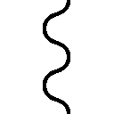
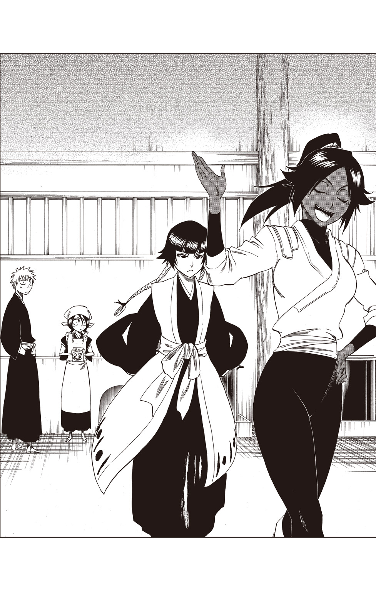

| BLEACH THE HONEY DISH RHAPSODY | |
| 久保帯人 & 松原真琴 | |
この本は縦書きでレイアウトされています。
また、ご覧になる機種により、表示の差が認められることがあります。
この作品はフィクションです。
実在の人物・団体・事件などにはいっさい関係ありません。
四番隊・綜合救護詰所。
西日の差し込むまぶしい廊下を、風呂敷包みを抱えた一人の死神が歩いていた。
四番隊第七席・山田花太郎だ。
「この部屋.........でもないかぁ」
部屋番号の下には患者の名前が書かれた木札が掛かっているのだが、そこに花太郎が捜している人物の名前はなかった。
広大な敷地に建つ、広大な綜合救護詰所。その三階部分の病室は、全て個室である。長い廊下に等間隔に並ぶ部屋の扉。歩いても歩いても変わらない風景に、花太郎は少し泣きたくなってきた。
「うぅ.........ルキアさん......」
目的の人物・朽木ルキアの名前をつぶやき、ため息と共に肩を落とす。そんな花太郎の背後に、音もなく近付いていく人影があった。
「おい」
「ひぃ......ッ!! ごめんなさいごめんなさいごめんなさいッ!!」
花太郎は頭を抱えてその場にうずくまった。反射的に謝ってしまうのは、こうして声をかけられるのは大抵上官に怒られる時だからだ。
「何謝ってんだ？」
「へ......？」
花太郎が恐る恐る伏せていた顔を上げると、そこには、十番隊隊長・日番谷冬獅郎が立っていた。夕陽を浴びて輝く銀髪のまぶしさに、花太郎はあわてて頭を下げた。
「日番谷隊長......！ おおおおお疲れ様です！」
「ああ。お前、確か.........山田、とかいったな」
「は、はい！ よっよよっよよ四番隊の山田花太郎です！」
きっちり正座をし、両手を付いて言う。
「そう畏縮するな。何もしやしねぇよ」
「はい、す、すみません!!」
「謝んなって」
「すみませ......あっ、すみませんって言ってすみません!! ......あ、あれ？ 今のすみませんもすみませ.........ああ！ また言っちゃった.........!!」
謝罪スパイラルに迷い込み、一生分の『すみません』を言いそうな勢いの花太郎を見て、日番谷はわずかに目を細めた。
「ここから四つ先の部屋だ」
「......え？」
花太郎が顔を上げると、日番谷は、つぃ、と顔を動かし、廊下の奥を指した。
「朽木ルキアの部屋を探してるんだろ？」
「あ、はい！ その通りです！ ......でも、どうして日番谷隊長がルキアさんの部屋を？」
不思議そうに尋ねる花太郎を見て、日番谷はため息混じりに言った。
「落ち着いて霊圧探れば、そのくらいお前にもわかるだろ」
「あっ！ そうですよね！ そうかぁ......そうすればよかったんだ.........！」
心底感心している様子の花太郎。
日番谷は、もう一度ため息をついた。
「ったく、しょうがねぇな......。席官なんだろ？ しっかりしろよ」
「すっ、すみません！ ありがとうございます！」
「ああ。じゃあな」
足音を立てずに去っていく日番谷の背中に、花太郎はもう一度、「ありがとうございます！」と、深く頭を下げた。
１
藍染の反乱から、四日。
混迷を極めた尸魂界も、徐々に日常を取り戻し始めていた。
「そこで日番谷隊長が、『ここから四つ先の部屋だ』って教えてくださったんですよー！ やっぱり、どの隊も隊長さんってすごいですよね！」
綜合救護詰所・三階。
開け放たれた窓から、花太郎の弾んだ声が聞こえてくる。窓際に据え置かれたベッドに腰掛けて相槌を打っているのは、朽木ルキアだ。
「だけど......日番谷隊長は、どうしてここにいらっしゃったんでしょう？ 隊長ご自身の傷は、もう完治されているはずなんですけど.........まだどこか痛むんでしょうか？」
「日番谷隊長は......雛森副隊長のお見舞いにいらしたのだろう」
ルキアはそう言って、静かに目を伏せた。
昨夜すれ違った際の、日番谷の沈痛な面もちが浮かぶ。
五番隊副隊長・雛森桃は、その胸に、藍染の刃で深い傷を負った。
彼女が絶対の信頼を寄せていた、藍染の刃で。
「雛森副隊長の施術は完了しました。肉体の傷は、いずれ癒えるでしょう」
上級施術室の前で、四番隊隊長・卯ノ花烈は、日番谷にそう言った。
「肉体の傷は、か......」
日番谷は無意識に、左手の親指の爪を嚙んだ。
『シロちゃん!! そうやって爪嚙まないの！ お行儀悪いよ！』
声、が。
声が、耳に甦る。
「......クソッ！」
日番谷は左手を下ろし、震えるほど強く、拳を握った。
「私にできるのは、目に見える傷を癒すことだけ......あとは本人の〝生きたい〟という意志の強さ次第です」
卯ノ花の表情からも、やりきれない思いが見て取れる。日番谷は卯ノ花から目を逸らし、そのまま暗い廊下を去っていった。
階段で彼とすれ違ったルキアは、無言で頭を下げることしかできなかった。
「日番谷隊長、お辛いでしょうね......」
「......そうだな」
うなずいたルキアは、花太郎が胸に抱いている風呂敷包みを見た。
「それは？」
「はい？ ......あ！ これですよね！ これはですねぇ......」
花太郎は包みを解いて、中の物をルキアに手渡した。
「これは......私のリュックか？」
それは、現世で捕らわれた際に背負っていた、水色のリュックサックだった。
「六番隊の隊舎牢にいた時に、ルキアさん、僕に話してくれたじゃないですか。『現世にはおいしいものがたくさんあった』って。『幾つかはリュックに入れて持ってきたのだが』って。だから僕、技術開発局に行って訊いてみたんです。ルキアさんの持っていた物を返してもらえませんか、って」
「おお、思い切ったな！」
技術開発局は、変わり者の集団でもある。局員は一癖も二癖もある者ばかりで、気の弱い隊員は、開発局に近づくことすらためらうほどなのだ。
「衣類や履き物は処分されちゃったみたいなんですけど、この鞄だけは保管されて......えーっと、保管、というか.........」
「というか？ なんなのだ？」
「霊波計測研究所の壺府さんという方が、処分されるはずだった鞄を引き取っていたんです。で、その......中に入っていた現世のお菓子を少しずつ食べていた...らしくて.........」
花太郎の声が、だんだん小さくなる。リュックを開けて中を覗き込んだルキアは、ふう、と息を吐いてから微笑んだ。
「残ったのは、これ一つか」
唯一残っていたのは、白い紙袋に入った白玉粉だった。
「.........はい。すみません」
「お前が謝ることではないだろう？ 元より、こうして戻ってくるとは思っていなかった物だ。気に病むことはない。......ありがとう、花太郎」
ルキアがそう言うのを聞いて、花太郎は、「そんなぁ、お礼なんて！」と、照れくさそうに笑った。
「この白玉粉はな、現世にある〝布袋屋〟という甘味処の最高級白玉粉なのだ！ これがあれば、おいしい白玉がたくさん作れるぞ！」
「あ、じゃあ僕、おいしいあんこをご用意しておきます！」
「そうか！ では、白玉ぜんざいが作れるな！」
「うわぁ、楽しみだなぁ！」
ルキアは、ニコニコしている花太郎の胸元から書簡がはみ出していることに気づいた。
「花太郎、その書簡は......？」
「あっ、そうだった！ すみません！ 卯ノ花隊長から、これをルキアさんにお渡しするように、って言われていたのを忘れてました！」
花太郎はあわてて書簡を引っぱり出し、「本っ当にすみません！」と頭を下げたまま、それをルキアに差し出した。
「気にするな」
花太郎にそう声をかけてから、書簡を開く。
一読し、心配そうに自分を見ている花太郎に言った。
「明朝、兄様が個室へ移られるそうだ」
ルキアの義兄である六番隊隊長・朽木白哉は、先の戦いで深手を負い、上級施術室に収容されていたのだ。
「じゃあ、もう傷は大丈夫なんですね！ よかったですね、ルキアさん！」
「ああ.........ありがとう」
ルキアは軽くうなずいて、外を見た。
日が、沈んでいく。部屋を満たしていた橙色の光が、徐々に薄らいでいく。
白い建物の多い瀞霊廷。夕暮れ時は、全てが暖かな色に染まる。その夕焼けの美しさには、誰もが息を飲み、言葉を失う。
ルキアと花太郎も、しばらくの間、黙ってその光景を見ていた。
「じゃあ僕、もう行きますね！」
夕陽を見送った後、花太郎が立ち上がって言った。
「なぁ、花太郎」
扉の手前でルキアに呼ばれ、振り向く。ルキアは広げたままの書簡に視線を落とし、眉根を寄せていた。
「兄様は......白玉ぜんざいを食べてくださるだろうか.........？」
そうつぶやいたルキアに、花太郎は、「もちろんですよ!!」と、大きくうなずいた。
「朽木隊長にお出しするなら、とびっきり上等なあんこを用意しなくちゃいけませんね！」
にこーっと笑う花太郎を見て、ルキアはホッと息を吐いた。
「......頼む」
「任せてください！」
花太郎は、丁寧に頭を下げて部屋を出て行った。
ルキアは書簡を畳みながら、なんと言って白哉に白玉ぜんざいを持って行けばいいだろうか、と考えていた。
２
花太郎は、走っていた。
昨日と同じように風呂敷包みを抱えて、四番隊隊舎の裏を走っていた。この道は、別棟である綜合救護詰所の裏口に通じているのだ。
「山田七席！」
そう声をかけられ、足を止める。出所を探してきょろきょろしていた花太郎は、「上ですよ、上」と言う声に、顔を上げた。
「荻堂さん！」
二階の窓から顔を出していたのは、四番隊第八席・荻堂春信だった。
「『さん』は要りませんよ。僕のほうが後輩なんですから」
「でも......荻堂さんは入隊して間もないのにもう八席じゃないですか。きっと、僕なんてすぐに追い抜いちゃうと思うんです」
「あははは、そんなことはないですよ！」
荻堂はにこやかにそう言い、「.........あまり上に行くと面倒事が多そうだし」と、小声で付け足した。
「え？ すみません、よく聞き取れなかったんですけど......」
「お気になさらず。ただの独り言です」
にっこり微笑まれた花太郎は、よくわからないまま、釣られて笑い返した。
「あ、そうだ。山田七席」
「はい？」
「さっき伊江村三席が捜してたんで、サボるつもりなら早く行ったほうがいいですよ。たぶん、見つかったら口には出せないほど変態的なお仕置きをされ.........」
「荻堂ッ!! 貴様という奴は、毎度毎度私を貶めるようなことを......!!」
荻堂が振り向くと、四番隊第三席・伊江村八十千和が、怒りで両肩と眼鏡をぶるぶる震わせながら立っていた。
「あーららァー」
「何が『あーららァー』だ！ さっさと仕事へ行け!!」
「はいはい」
「返事は一度!!」
「はーい」
「山田！ お前、そこを動くなよ!!」
伊江村は窓から身を乗り出して叫び、すぐに階段のほうへ駆けて行った。
荻堂は、（逃げ切れるかなぁ......山田七席）と思いながら、再び下を見る。そこには、ぼんやりした顔で大人しく待っている花太郎がいた。
「......何してるんですか？ 早く逃げないと、エロ三席が来ちゃいますよ」
とっくに逃げ去っているものと思っていた荻堂は、意外そうに言う。花太郎は、困ったように笑った。
「あは......僕、これでも班長ですから。やっぱり、仕事はちゃんとしないと。.........そうだ！ 荻堂さん、これを朽木ルキアさんのところへ持って行ってもらえませんか？」
花太郎は持っていた風呂敷包みを、「いち、にの、さんっ！」で投げ上げる。窓から若干離れたところに上がったが、荻堂が手を伸ばし、上手く摑み取った。
「救護詰所ですか？」
「そうです」
「中身は？」
「あんこです」
「あんこ？」
「はい。ルキアさんが白玉ぜんざいを作っ......」
花太郎の返答は、「山田ぁ――!!」と言う伊江村の声にかき消された。
「じゃあ、よろしくお願いします！」
ぺこっ、と軽く頭を下げた花太郎に、伊江村が駆け寄る。
「不器用な人だなァ......」
荻堂は、叱られている花太郎を見てポツリとつぶやき、風呂敷包みを提げて歩き出した。
綜合救護詰所二階・炊事場。
広い炊事場の一角を借りて、ルキアは白玉粉を練っていた。
「耳たぶくらいの硬さ......耳たぶくらいの硬さ.........」
呪文のようにそう繰り返しながら、右手で粉を練り、時折、左手で耳たぶを触る。
荻堂はその様子を、ルキアの三歩後ろに立って見ていた。
霊圧を辿ってルキアを見つけた荻堂は、自分が背後に立ったことにも気づかないほど懸命に粉を練っているルキアを見て、驚いた。
朽木家は、四大貴族の一つ。自分とは、月と砂ほども身分の差がある。そのご令嬢が、割烹着に三角巾という出で立ちで、粉にまみれているのだ。
「感動すら覚える......」
ため息のようなその声に、ルキアがビクッと肩を震わせ、振り向いた。
「だ、誰だ!?」
片手をボウルに突っ込んだまま、上体をひねって荻堂を見る。荻堂は、ルキアに一礼してから、言った。
「私は、四番隊第八席、荻堂春信と申します。山田七席の遣いで、こちらをお届けに伺いました」
「そうですか、花太郎の......。そこへ置いておいてください。手が塞がっているので」
荻堂は、（あれ？ 敬語だ......）と思いながら、「承知いたしました」と答えて包みを調理台の空いているところへ置いた。
「花太郎はどうしたのですか？」
「七席は、うちの伊江村三席に捕まってしまいまして。......あの様子では、今日は一日中解放されないのではないかと」
「......では、礼を言っていた、とお伝え願えますか？」
「確かに、承りました」
ルキアは、頭を下げて炊事場を出て行く荻堂を見て、微かな胸の痛みを覚えた。
流魂街出身の自分が、貴族として扱われること。その居心地の悪さ。
十三番隊へ配属されてからは、ほとんど感じることのなかった痛み。現世へ行ってからは、思い出すことすらなかった。
（私は、恵まれているな.........）
ルキアは、それに感謝しつつ、練り上がった白玉粉を丸め始めた。
３
十番隊隊舎・執務室。
日番谷は、黙々と卓上の書類をさばいていた。その眉間に、深々と皺が寄っている。
その原因が――
「ねぇ乱菊さん？ お昼休み、もう終わってるんじゃ......」
「あはは、いいのいいの！ マジメねぇ、織姫は」
――これだ。
執務室の隣には、賓客をもてなすための貴賓室がある。目が痛むほどの青空が広がっている今日は、どちらの部屋の窓も大きく開かれていた。当然、こうして隣室の会話が聞こえてくる。
「うちは隊長が優秀だから、ちょっとくらいサボってもかまわないのよ！」
十番隊副隊長・松本乱菊は、日番谷を褒める時だけわざと声量を上げた。
（あの野郎.........ッ!!）
自分に声が聞こえていると知りつつ、堂々と職務をサボる乱菊。
日番谷のイライラは募るばかりだ。
というわけで、貴賓室。
井上織姫は、乱菊に死覇装の帯の結び方を習っていた。
「こう......かな？」
「そうじゃなくてね、これをこっちに......ね！ ハイ、出来上がり！」
「わぁ......！」
織姫は、部屋の隅にある大きな姿見で結び目を見て、顔をほころばせた。
乱菊に憧れて、この独特な結び方を真似る女性死神は多い。織姫は死神ではないが、美しくてかっこいい大人の女性である乱菊に憧れる気持ちは、女性死神たちと同じだ。
「ありがとうございます！」
「いいのよ、お礼なんて。......あ、織姫、ちょっとこっち来て」
乱菊に手招きされて、織姫は彼女の前に立った。
「うーん、どうもねぇ......」
「どこか変ですか？」
乱菊は、首をかしげている織姫の襟に両手をかける。
「何するんっ......きゃああああっ!!」
ばっ、と左右に襟を開かれた織姫は、顔を真っ赤にして悲鳴を上げた。
「やっぱり胸元はこのくらい開かなきゃダメよ！ 織姫！」
ウィンクしてみせる乱菊と同じくらい大胆に開かれた胸元を見て、織姫はさらに顔を赤くした。
「でも......やっぱりあたし、恥ずかしいから.........」
織姫はそう言いながら、いそいそと襟を直す。
「そーぉ？ せっかく恵まれてんだから、もっと強調しちゃえばいいのに。七緒みたいに貧しい子だっているんだから」
「誰が貧しい子ですかッ!!」
背後から聞こえた声に振り向くと、窓の外に、たった今、遠回しに貧乳の烙印を押された、八番隊副隊長・伊勢七緒が立っていた。
「あら、七緒！ 貧乳だから気づかなかった」
「か、関係ないでしょう!?」
七緒は、脇に抱えていた書類の束を、胸を隠すように持ち替える。
「.........気にしてんじゃないの」
「何かおっしゃいましたか？ 松本副隊長」
ドスの利いた声でそう言われた乱菊は、（やれやれ......）と、肩をすくめた。
「で、なんの用？ 京楽隊長なら来てないわよ」
「そう...ここにも来てないの......。全く、仕事もしないでフラフラと.........！」
乱菊は、ぶつぶつ文句を言いながら去っていく七緒を見送る。
「七緒も大変ねぇ.........あたし、デキる人の部下でホントによかったわー！」
隣にいる日番谷に聞こえるよう、大音量の独り言を言ってから、くるりと振り向く。
「うおわぅ!! 京楽隊長!?」
織姫の隣に、たった今七緒が捜していた人物、八番隊隊長・京楽春水が、のほほーんと座っていた。
「やぁ、お邪魔してるよ」
「『お邪魔してるよ』じゃないですよ！ 今いないって言ったばっかりなのに......あたしが七緒に叱られたら隊長のせいですからね！」
乱菊が腕組みをしつつ、言う。それを聞いた織姫は、目を丸くした。
「え!? じゃあ、さっきの死神さんはこの人を捜してたんですか!?」
「そっか......あんた京楽隊長とは初対面なんだ？」
乱菊の問いに、織姫は大きくうなずいた。瀞霊廷内で何度か見かけたことはあったが、名前や所属は知らなかったのだ。
「だったら、自己紹介をしなきゃねぇ」
京楽は、こほん、と一つ咳払いをした。背後に薔薇でも咲き乱れそうなすてきな微笑みを浮かべて、織姫を見る。
「お嬢さん、はじめまして。ボクは京楽春水。キミは旅禍の......」
「はい！ 井上織姫です！ よろしくお願いします！」
織姫は、にこぉーっと笑って言った。
京楽の勝負フェイスは、織姫には全く効果がなかったらしい。
「織姫ちゃんかぁ.........かーわいいねぇ」
が、京楽は満足げだ。先ほどのキリリとした表情が噓のように、緩みきった顔で織姫を見ている。かわいい女の子は、その場に居るだけで人をこんなにも幸せな気持ちにしてくれるのだなぁ、と、京楽はしみじみ思う。
「で？ 隊長はうちにサボりに来たんですか？」
今現在、思いっきり職務をサボっている乱菊が長い脚を組み替えながら訊くと、京楽は足元に置いていた紙袋を持ち上げた。
「いやね、さっき久里屋に行って来たからさ......これ、乱菊ちゃんにもお裾分けしようと思って」
京楽が紙袋の中から取り出した紙箱のふたには、筆文字で大きく【徳利最中】と書いてあった。
「とっくり......もなか？」
「ほほぉーう。現世の子は、難しい字も読めるんだねぇ。すごいねぇ」
「えへへ......それほどでもないっス！」
織姫は、期末テストで学年三位になるほど勉強ができる。普段の発言がほんわりしているためそういうイメージは湧きにくいが、才女なのだ。
「徳利最中はおいしいわよォ！ お茶淹れ直すから、みんなで食べましょ！」
乱菊は急須を持って立ち上がった。窓枠から身を乗り出し、執務室の窓に声をかける。
「隊長はどうしますー？」
「要らん!!」
間髪いれず、そう返ってきた。
乱菊が熱いお茶を持って貴賓室へ戻ると、織姫が真っ赤な顔で目を回していた。
「どうしたの織姫!?」
乱菊は織姫の両肩を摑んで、顔を覗き込む。
「あはぁ、らんぎくさん！ もなかはクジラで......コッペパンにはさんでたべますよねぇ～！」
織姫はあらぬ方向を向いたまま、サッパリ意味のわからないことを言った。
「この子に何したんですかァ!?」
乱菊が京楽に向かって言う。
「何もしてないよぅ。一緒に最中食べてただけだよねー？」
京楽が同意を求めても、織姫は体をフワフワ揺らすのみで答えない。
ゆらゆらしている織姫の前に、最中の包み紙が、三枚。
「お、織姫!?」
織姫は突然長椅子から立ち上がり、気を付けの姿勢のまま、ゆっくりと、床に.........倒れるすれすれのところで、その体を乱菊がどうにかキャッチした。
「あ、危なかった......!!」
額に冷や汗を浮かべて、乱菊が言う。
「ありゃ......？ 徳利最中で潰れちゃったみたいだねぇ」
徳利最中は、中のあんこに酒粕が練り込んである最中なのだ。上等な酒粕を使っているため、酒の風味が苦手な人でもおいしく食べられる......が、アルコール度数は相当高い。
「織姫!? ちょっと大丈夫!? オーリーヒーメ――!!」
「織姫ちゃ――ん！ しっかり――!!」
その時、貴賓室の扉がバァーンと開き、怒りが頂点に達した日番谷が入って来た。
「お前らいい加減に.........！」
「隊長！ ちょうどよかった!! 氷出してください、氷!!」
「ああ、それはいいアイデアだねぇ！ 氷輪丸でちょちょーいと......」
「出すかッ!!」
――日番谷隊長は、今日も大変です。
４
綜合救護詰所二階・炊事場。
部屋中に、甘い匂いが満ちている。
「できた......！」
寸胴いっぱいの白玉ぜんざいを前にして、ルキアは三角巾を外し、軽く息を吐いた。
「お？ ルキアじゃねぇか！」
匂いに誘われて炊事場を覗き込んだのは、六番隊副隊長・阿散井恋次だ。額の入れ墨や鋭い目つきからは想像し難いが、彼はかなりの甘党なのである。
「おお、恋次！ どうした？」
「そりゃこっちのセリフだ！ なんだよ、この匂い？ 何作ってんだ？」
恋次はルキアの隣まで歩きながら、立ちこめているあんこの甘い匂いを嗅いで、「ぜんざいか？」と訊いた。
「白玉ぜんざいだ。この白玉はなぁ、現世から持ってきた白玉粉で作った、ものすごーくおいしい白玉なのだ！ ......兄様に食べていただこうと思ってな」
「へぇ......だったら、俺が味見しねぇとな！」
「なっ!? どういうことだ!?」
恋次は近くの棚を適当に開けて、中から小皿を取り出す。
「隊長に得体の知れねぇモン食わすわけにはいかねぇだろ？ 副隊長としては」
白玉ぜんざいをおたまで少量すくって小皿に取り、ルキアが何か言う前に飲み干した。柔らかく滑らかな白玉に、程良く粒の残った品の良い甘さの餡が絶妙な塩梅で絡んでいる。
「お!? なんだよ！ 旨ぇじゃねぇか！」
心底意外な顔で言う恋次。
恋次とルキアは、南流魂街七八地区・戌吊で、肩を寄せ合い、共に育った。その頃のルキアが作った料理は寿命が縮みそうなほどひどい味で、恋次は決してルキアに食事作りを任せなかった。
（あのルキアが、こんなに旨いものを......）
恋次は、ちょっと感動していた。
「貴様......食べたかっただけだろう.........？」
ルキアは、そんな恋次の気持ちなど知る由もなく、白玉ぜんざいをよそう器を探し始めた。
「でもよォ、ルキア」
「なんだ？」
汁椀を持って振り向いたルキアに、恋次が言う。
「朽木隊長、辛いもののほうが好きだぜ？」
「何!? それは本当か!?」
「噓ついてもしょうがねぇだろ！」
ルキアは汁椀を置き、腕を組んで考え込む。
「しかし私は......朽木家での食事を辛いと思ったことは一度もないぞ？」
「ホントかよ？ オメーの舌がおかしいんじゃねぇの？」
ゴスッ
「いってぇッ!!」
ルキアに尻を蹴られ、恋次が叫んだ。
ルキアは何事もなかったような顔をして、「むしろ甘めの味付けだったと思うのだが.........」と、味の記憶をたどっている。
「訊いてみればいいじゃねぇか、朽木家の料理番によ」
尻をさすりながら言う恋次に、ルキアは、「そうだな」とうなずいた。
「恋次！ 白玉ぜんざいの見張りを頼むぞ!!」
「何ィ!? おいコラ！ ルキア!!」
恋次が止めるのも聞かず、ルキアは炊事場から出て行ってしまった。
「ったくよォ.........」
壁際に寄せてあった椅子を持ってきて、鍋の前に座る。
「つーかこれ、作りすぎだろ......。隊長の血糖値、どんだけ上げるつもりだ......？」
寸胴いっぱいの白玉ぜんざい。
その脇に、ルキアが出した、汁椀。
「一杯くらい......いいよな？」
恋次はおたまを手に取り、汁椀になみなみと白玉ぜんざいをよそった。
朽木邸。
朽木家の炊事場は、綜合救護詰所のものとは比べものにならない広さだった。多くの料理人が、湯気の中で忙しく働いている。
ルキアは、出入り口の近くでニンジンの飾り切りを作っていた料理人に声をかけ、炊事場の一切を取り仕切っている筆頭料理番を呼んでもらった。
奥から現れた筆頭料理番は、背の低いがっしりした体格の男だった。腰の周りに、大小様々な包丁を差している。
「味付けのことで、訊きたいことがあるのだ」
「味付け......でございますか？」
「私は甘かったように思うのだが、兄様は辛いものがお好きだと聞いたので......」
料理番は、「そのことでしたか」と、軽くうなずいた。
「.........確かに、白哉様のお食事は辛め、ルキア様のお食事は甘めの味付けでお出ししております」
恋次が言ったこともルキアが感じたことも、間違いではなかったのだ。
「それは......なぜなのですか？」
「白哉様が、そのようにせよ、とおっしゃいましたので」
「兄様が......？」
不思議そうに言うルキアを見て、料理番は優しく微笑んだ。
「白哉様の御心は、私のような下賤な者には到底測れませぬ。ですが.........緋真様は、甘い味付けがお好きでした」
緋真とは、白哉の亡き妻の名である。ルキアによく似た面立ちの緋真が、ルキアの実の姉であると知ったのは、つい先日のことだ。
深々と頭を下げ、料理番が炊事場の奥へ戻っていく。
（兄様はずっと、目には見えぬ形で私を思いやっていてくださったのだな.........）
ルキアは、長年感じていた心の溝が、じわじわと埋まっていくのを感じた。
正門の前で足を止め、その巨大な門扉を振り仰ぐ。
威圧的で嫌いだった。くぐるたび、己の小ささを責められているように思えた。
（好きになれそうだ............この門も、この屋敷も）
青空に調和する、濃紺の瓦屋根。
午後の日差しを受け、水面のようにキラキラと輝いている。
ルキアはそれを、心から美しいと思った。
再び、炊事場。
「で、どうだった？」
ルキアは恋次に、屋敷で聞いたことを話した。
「これから、何か辛いものを作ろうと思う」
恋次は、晴れやかな顔でそう言うルキアの背中を、ばんっ、と叩いた。
「ゲホ......ッ！ な、何をするのだ!!」
「なんでもねぇよ！ じゃあな！」
咳き込むルキアを見て笑い、恋次は炊事場を出て行く。
「......よかったな、ルキア」
廊下を歩きながら、ごく小さな声で言った。
「馬鹿力め......」
炊事場に残されたルキアは、恋次に叩かれた背中をさすりながらつぶやいた。言葉とは裏腹に、その表情は柔らかい。恋次がただ叩いたわけではないことを、ルキアは知っている。
（辛いものを作るにしても......これをどうしようか.........）
寸胴いっぱいの白玉ぜんざいの前で、腕を組んで考え込む。
「......そうだ！ 後で浮竹隊長のところへ持って行こう！」
尸魂界全体が事後処理に追われ、皆忙しくしていたので、ルキアは自分の所属部隊である十三番隊隊長・浮竹十四郎とゆっくり話をする機会を逸していたのだ。
まだ温かい鍋をガス台から下ろし、ふたをした。
「ふぅ......」
ルキアが一息ついているところに、甘い匂いに誘われて、また一人、甘いもの好きの死神がやってきた。
「おょ？ ルッキーだぁ！」
幼い子供のような外見に、桜色の髪。十一番隊副隊長・草鹿やちるだ。
やちるは、ぴーん、と手を上げ、手を振りながら跳ねるように近付いてくる。
「草鹿副隊長......！ お疲れ様です！」
「なんかいいニオイするね！」
ルキアは、フンフンと小さな鼻で匂いの元を探すやちるに、鍋のふたを開けて見せた。
「白玉ぜんざいを作っていたのです」
「あっはぁ！ おいしそーう!!」
やちるが目を輝かせる。
「ねぇねぇ、これ誰かにあげんのー？」
やちるは、ルキアの袖を引きながら訊いた。
「十三番隊のところへ持って行こうかと.........」
「じゃあ、あたしが持ってってあげるよ！」
「い、いえ！ 副隊長にそのようなことをお願いするわけには.........！」
「いいっていいって！」
やちるは、二十キロはありそうな鍋をひょいっと持ち上げ、頭に乗せた。
「あぁっ！ 草鹿副隊長.........！」
「まっかせといて――!!」
ルキアが止めるのも聞かず、駆け出す。
バランス感覚がずば抜けて良いためか、鍋が落ちる気配はない。
ルキアが後を追って炊事場を出た時には、もう、やちるの姿は見えなくなっていた。
５
十三番隊隊舎。
その最奥、隊舎の喧噪も届かぬほど長い渡り廊下の先。竹林に囲まれた池の中心に建つ離れ家が、十三番隊隊首室・雨乾堂である。
「うっきー、うっきー！ あたしだよー！」
やちるが御簾越しに声をかけると、すぐに中から浮竹が現れた。
「草鹿じゃないか！ どうしたんだい？ ここへ来るなんて初めてじゃないのか？」
「あのね、ルッキーに頼まれたの！ これ届けて、って！」
やちるは、頭の上の寸胴を指して言った。
「ルッキー？」
「うん！ 朽木ルッキー！」
「ああ、朽木のことか！」
「そう！ 作ったんだって！」
浮竹がふたを開けたので、やちるは、「白玉ぜんざいだよ！」と教えてあげた。
「これはおいしそうだ！ .........でも、こんなにたくさんは食べられないな......」
「じゃあじゃあ！ あたしが食べてあげ......」
「よし！ 日番谷隊長のところへお裾分けしよう!!」
「えぇっ!!」
不満いっぱいの顔で声を上げるやちる。そんなことはお構いなしに、浮竹は一旦部屋へ戻り、隊首羽織を身に着けて出てきた。
「さぁ、草鹿も一緒に行こう！」
浮竹は朗らかな笑みを浮かべて、むむ――っとむくれたまま動かないやちるの手を引き、雨乾堂を後にした。
十番隊隊舎・執務室。
「.........まぁ、こんなもんだろ」
日番谷は、卓上に積み上げた処理済みの書類を抱えて、ドサッと提出箱に入れた。こった肩を回しながら、執務室を出る。
「やぁ、日番谷隊長！ ちょうどよかった！」
声のほうへ顔をやると、浮竹が廊下をこちらへ歩いてくるのが見えた。
「浮竹...隊長.........」
にこやかに片手を上げている浮竹の後ろに、もう一人。
「......と、草鹿」
日番谷の前に立っても、やちるはふくれっ面で押し黙っている。
「朽木がこれを差し入れてくれてな！ お裾分けに来たんだ！」
「はぁ、そっスか」
やちるとは対照的な表情で、浮竹は寸胴鍋のふたを開けてみせた。もちろん、鍋は依然やちるの頭の上にある。
「あの......鍋敷きがスゲーむくれてんスけど.........」
日番谷に指摘されて初めて、浮竹はやちるが不機嫌なことに気づいた。長身の浮竹からは、鍋に隠れてやちるの顔が見えないのだ。
「すまない、草鹿!!」
浮竹は、やちるの頭から鍋を持ち上げた。
「重かったんだよな！」
万事解決、という思いが滲み出たような笑顔を見せる浮竹。
やちるの頰はふくらむばかりだ。
（早く食わせろ、ってことだと思うんだが......）
視点が近いせいか、日番谷はやちるの気持ちを的確に把握していた。が、それを浮竹に伝えようと口を開いた時、
「隊長、誰としゃべってんですかぁ？」
貴賓室のドアが勢いよく開き、ふらりと乱菊が出てきた。
「やぁ、松本！ 飲んでるな！」
「浮竹隊長じゃないですか！ 一緒にどうです？」
乱菊はそう言って、貴賓室を指す。
「そうだなぁ......」
「修兵がいい酒持って来たんですよォー」
「じゃあ......一杯だけもらおうかな！」
浮竹の返答を聞いて、乱菊は、「そうこなくっちゃ！」と笑った。
「オイ、浮竹に無理させるな」
そんな乱菊を、日番谷が小声で諫める。
浮竹は、立派な体軀とは裏腹に、体が弱い。無理がたたると何日も床に就かなければならなくなる。日番谷はそれを心配しているのだが......。
「その鍋は？ 差し入れですかァ？」
今の乱菊に小声での忠告は届かなかったらしい。
（この......ッ！ 聞いちゃいねぇ!!）
内心でそう叫びながら、日番谷は懸命に怒りを抑えた。
彼はいつも、『些細なことに腹を立てるのはガキのすることだ』と自分に言い聞かせることで、心を鎮める。.........乱菊と一緒にいると鎮められないことも多いのだが。
日番谷は、鍋のふたを開けて「あら、おいしそう！」と言っている乱菊に、「朽木ルキアからだそうだ」と教えてやる。
「朽木から？」
乱菊の問いかけに、浮竹が、「そうなんだ」とうなずく。
「あたし達がいただいちゃってもいいんですか？」
「大丈夫さ！ こんなにあるんだから！ 十三番隊へは、残った分を持って行くよ」
「そういうことなら遠慮なくいただきます！ さ、中へ入ってください！」
乱菊は大きくドアを開けて、鍋で手が塞がっている浮竹を部屋に通した。
「ほら！ 隊長も！」
「いや、俺は......」
「いいからいいから！」
傍に立っていた日番谷の背中を押し、部屋に入れる。
「やちる、何むくれてんのよ？ あんたにもよそってあげるから、こっちいらっしゃい」
乱菊のその一言で、やちるは一気に笑顔を取り戻した。
「うんっ!! モリモリの山盛りね!!」
「はいはい」
やちるを中へ入れてから、乱菊は十番隊の炊事場へ汁椀を取りに行った。
貴賓室では、京楽と九番隊副隊長・檜佐木修兵がテーブルを挟んで向かい合い、酒を飲んでいた。徳利最中で酔い潰れた織姫は、壁際の長椅子ですぅすぅと寝息を立てている。
「邪魔するよ！」
入ってきた浮竹を見て、二人は目を丸くした。
「おんやぁ、浮竹じゃないか！ 珍しいねぇ！」
「浮竹隊長！ お体のほうは大丈夫なんですか!?」
京楽は軽く手を上げ、檜佐木は立ち上がって、言う。
「大丈夫！ 今日は朝からずっと調子がいいんだ！」
浮竹は机の上に鍋を置き、京楽の隣に座った。檜佐木にも座るよう促す。
「だからって、こんな酔っぱらい共に付き合ってやる必要はないんだぜ」
「そーだそーだ！ 酔っぱらーいっ!!」
浮竹の陰になっていて一切見えなかった日番谷とやちるが言う。
（わぁ、小さいなぁ......）
（ちっちゃいねぇ......）
（ダブルで見ると、より小さい......）
護廷十三隊隊士の身長ワースト１と２が並んでいるのを見て、三人とも同時に同じことを思った。
「お前ら......何考えてるか顔に出てるぞ.........！」
日番谷がぶるぶる拳を震わせていたところに、「お待たせー！」と、汁椀を持って乱菊が戻ってきた。
「助かった.........！」
思わずそうもらした檜佐木を、日番谷がギロリと睨む。檜佐木は、「なんでもないっス」と言い、あわてて目を逸らした。
「あたし、いっちばーん!!」
やちるは乱菊の隣に立ち、待ちきれない様子でその手元を覗き込んでいる。
「はい、どうぞ」
乱菊は、お椀をちょっと傾けたらこぼれそうなほどすれすれまで白玉ぜんざいを注ぎ、そーっとやちるに手渡した。
「モリモリの山盛りはー？」
「液体だからこれ以上は無理」
「えぇっ」
「文句言わないの！ あそこに茶菓子があるから、足りないならそっち食べなさい」
やちるは箸を使わず、中身をザバーッと一気に口に入れた。頰をパンパンにふくらませて、もぐもぐ白玉だんごを嚙んでいる。
（小動物......）
日番谷は、乱菊から自分の分の白玉ぜんざいを受け取りながら、やちるを見てそう思った。
「あれ？ 修兵、あんた食べないの？」
皆がぜんざいを食べる中、檜佐木だけはお椀を右手に持ったまま、左手でお茶を飲んでいた。
「俺、甘い物つまみに酒飲めないんで、ちょっと酔いが醒めてから食べ......」
ばくっ
「......ん？」
右手に、奇妙な感触。
檜佐木が恐る恐る右手を見ると、手首から先が、やちるの口内へ消えていた。
「ギャアッ!! く、く、喰われ.........ッ!!」
「コラやちる！ いやしいわよ！」
乱菊は取り乱している檜佐木からやちるを引っ剝がし、その口に躊躇無く手を突っ込んで、空になったお椀を取り出した。
（喰われたのかと思った......！）
檜佐木は青ざめたまま、やちるのツバでべっとべとになった手を、傍にあった布で拭いた。
「.........おい、檜佐木」
布を、目でたどっていく。
その先にあった、日番谷の凍てつくような目。
それは、十番隊隊長の――隊首羽織だった。
「ひぃ！ すみません.........っ!!」
檜佐木が謝っても、日番谷は無言で白玉ぜんざいを食べ続けている。眉間の皺は、もちろんかつてないほどに、深い。日番谷の怒りは、〝冷気〟という形で檜佐木を包み込む。八月の午後だというのに、檜佐木は全裸で南極に放り出されたかのような寒さを感じていた。
一気に酔いが醒めてしまった檜佐木は、気を紛らせようと酒を呷ったが、恐怖で全く味がしないのだった。
一方乱菊は、滝のような冷や汗をかいている檜佐木など気にも留めず、長椅子で眠る織姫の肩を叩いていた。
「織姫、起きて！ 白玉ぜんざいあるわよ！」
「んん............誰？ ピロポッソキャンモラ......？」
ぼんやりと目を開いた織姫は、謎の言葉をつぶやいた。完全に寝ぼけている。「何よそれ？」と首をかしげる乱菊を見て、バッと体を起こした。
「はっ!! 乱菊さん!? ピロポッソキャンモラ星人は!?」
......宇宙人の名称だったらしい。
「よしよし、そんなのいないわよー」
乱菊に、ぽんぽん、と頭を撫でられて、織姫はようやく自分が眠っていたのだと知った。
「あたし、なんで眠っちゃったんだろう......？」
「最中を食べたの、覚えてる？」
織姫は、「徳利最中ですよね」とうなずいた。
「そう、徳利最中。あれにはね、酒粕が入ってんの」
「酒粕......!?」
「あんた、それで酔い潰れちゃったのよ。思い出した？」
「うーん.........助けた宇宙人と仲良くなったことしか思い出せないなぁ......」
「そ、そう。......ま、それはそれとして！ ほらっ、織姫の分！」
まだ半分夢の中にいるような織姫に、乱菊が白玉ぜんざい入りの汁椀と箸を渡す。
「わぁー！ おいしそう！」
「朽木が作ったんですって」
「朽木さんが？ .........あは、おいしーい!!」
一口飲んで、織姫は心から幸せそうに笑った。
「ンフフフー、かわいいねぇ......」
京楽は、これ以上下がらないところまで目尻を下げて、織姫が白玉ぜんざいを食べる様子を見ている。
少し寝癖の付いた頭で、はぐはぐぜんざいを食べる織姫の様子は、京楽だけでなく、その場にいた全員の心をほんのりと癒した。
「はーっ！ ごちそうさまでした！」
空腹だった織姫は、ぜんざいを一気に平らげて、箸とお椀を乱菊に返した。腰掛けていた長椅子から立ち上がり、両手を上げて伸びをする。
「あたし、ちょっと朽木さんにお礼言ってきます！」
部屋のドアに手をかけた織姫を、乱菊が呼び止めた。
「一人で帰れるの？ 瀞霊廷の道、イマイチわかってないんでしょ？」
「だ、大丈夫ですよー！」
「ホントにぃ？ 今日十番隊舎来る時も二時間迷った、って言ってたじゃないの」
「大丈夫...です.........たぶん」
頼りないその返事を聞いて、浮竹が寸胴鍋を持ち、立ち上がった。
「だったら、俺と一緒に来るかい？ 残った分を十三番隊のみんなに配った後、空の鍋を返しに行くつもりなんだ」
「いいんですか？ 付いて行っても」
「もちろん！ ......じゃあみんな、失礼するよ！」
浮竹が部屋を出て行く。
「乱菊さん、お茶ごちそうさまでした！」
「いいのよォー、またいらっしゃい」
「冬獅郎くん、お仕事中にお邪魔しました！」
「〝日番谷隊長〟だ！ ......またな」
「京楽さん、徳利最中おいしかったです！」
「うん、またねぇ」
「............？ えっと.........？」
織姫は、檜佐木を見て首をかしげた。檜佐木は織姫が眠っている間に来たので、誰だかわからないのも仕方がない。檜佐木は、「俺のことはいいから」と、軽く手を上げた。
部屋の隅にある棚の前には、接客用の茶菓子を食べ散らかしているやちるもいたのだが、ちょうど京楽の陰になっていて、織姫からは見えなかったらしい。
「ではみなさん！ お先に失礼しますっ！」
ぺこん、と頭を下げて、織姫は部屋を後にした。
浮竹と織姫は、ルキアのことを話しながら十三番隊隊舎へ向かう途中、伊勢七緒に会った。
「やぁ、伊勢！ 元気にしてるか！」
「浮竹隊長......！ お体の具合はいかがですか？」
「最近は落ち着いてるよ」
「そうですか......」
七緒は少し表情を和らげ、ピッと指を揃えた手で、下がってきた眼鏡を押し上げた。
「あの、こんにちはっ！」
そう声をかけられて、織姫に目をやる。
「ああ、あなたは旅禍の.........さっき十番隊の隊舎でお会いしましたね」
「はい！ 井上織姫です！」
「八番隊の伊勢七緒です。よろしく」
「さっきはごめんなさい」
ぺこ、と頭を下げた織姫を見て、七緒は眉をひそめた。
「あたし、京楽さんのことよく知らなくて......七緒さんの捜してる相手が京楽さんだってわからなかったんです。もし知ってたら、追っかけて教えてあげられたのになーって......」
「どういうことですか!?」
「えっ？」
「私が行った時、隊長は部屋の中にいたんですか!?」
「い、いえ......ちょうど七緒さんと入れ違いに.........」
「今は!? 今も十番隊舎にいるんですか!?」
「いると思いますけど......」
七緒はそれを聞くや否や、「失礼します」と言って走り出した。
去っていく七緒の背中から、怒りのオーラが滲み出ている.........ように見えた。
「言わないほうが......」
「よかったのかもしれないな......」
二人はそうつぶやいて、京楽の無事を祈った。
十番隊隊舎・貴賓室。
「隊長!!」
なんの前触れもなくドアが開き、七緒が入ってきた。
「な、七緒ちゃ.........ォぶッ!!」
七緒は、持っていた書類の束で京楽の横っ面をブッ叩き、ジロリと乱菊を睨んだ。
「乱菊さん......」
「な、何よぅ！ さっき噓ついたわけじゃないのよ？ 京楽隊長は、あんたが行った後で来たんだから！」
「ほんとなんだよぅ、七緒ちゃ......ぅぶォッ!!」
京楽に二度目の書類ビンタが炸裂する。先ほどとは逆の頰をひっぱたかれ、バランス良く両頰が赤く染まった。
七緒が一向に疑いのまなざしを崩さないので、乱菊は日番谷の後ろに立ち、「隊長からも言ってやってくださいよォー」と、小さな両肩に手を置いた。
「知らん！ 俺はずっと一人で仕事してたからな!!」
乱菊は一瞬、しまった、という顔をしたが、すぐに笑顔を取り戻して日番谷の肩を揉んだ。
「そんな怒んないでくださいよぅ。後でちゃんとやりますからー！」
「.........もうやった」
「え？」
日番谷は、驚いている乱菊の手を払い除け、向き直った。
「お前の分もやっておいた！ お前なぁ、提出期限がとっくに過ぎてる書類が何枚も......」
「たぁいちょ――――っ!!」
乱菊は、ぎゅううううっ、と日番谷を抱きしめた。
二人の身長差は、約四〇センチ。当然、抱きしめられれば、日番谷の顔はちょうど乱菊の神々の谷間に沈む形になる。
「う、うらやましい......！」
檜佐木が羨望のまなざしを送る中、日番谷は手足をばたつかせていた。よく見ると、何度も乱菊の背中を叩いている。
「乱菊さん、それ、タップしてるんじゃ......」
「え？ そう？」
檜佐木に指摘されて、乱菊が腕を緩めた。途端、日番谷が膝からその場に崩れ落ちる。
「ゲホッ......！ はぁ、はぁ、はぁ.........こっ、殺す気なのか俺を!!」
ようやく窒息状態から脱した日番谷は、荒い呼吸の合間に乱菊を見上げて言った。
それにしても、神々の谷間で窒息死とは......コンなら喜んで立候補しそうな死に方である。
「やだなぁ！ 殺す気なんてあるわけないじゃないですか！」
乱菊は、事も無げに言う。
「俺は一瞬、いろんなことを諦めかけたぞ!?」
「まぁまぁ、もう済んだことじゃないですか！」
「お前が言うなッ!!」
......日番谷の苦労は、これからも絶えそうにない。
そんな二人を楽しそうに眺めていた京楽は、希望に満ちた目をして七緒に言った。
「もしかして、七緒ちゃんもボクの分をやってくれたんじゃ......！」
「やってません！」
七緒にぴしゃりとそう言われ、京楽は、「ちぇー」と唇を尖らせた。
「隊長の判がなければ提出できない書類がどのくらいあるとお思いですか!? 隊長が副隊長の仕事を代わることはできても、その逆は無理なんですからね！ それを食べ終えたらすぐ隊舎へ戻っていただきますから!!」
七緒は、京楽が持っている汁椀を指して言った。
「じゃあ、ゆっくり食べ.........」
「本気で怒りますよ」
七緒の目が、スゥ......と細められる。
書類を持つ指に力が込められたのを、京楽は見逃さなかった。
「ゴ、ゴメンよ！ 機嫌直してよぅ、七緒ちゅわーん！」
「気色の悪い声を出さないでください！」
「だってさぁ......」
「だってじゃありませんッ!! さっさと食べるッ!!」
七緒に叱られながら白玉ぜんざいを食べている京楽を見て、檜佐木はふっと目を伏せた。乱菊がそれに気づき、檜佐木の顔を覗き込む。
「乱菊さん......？」
「あんた、『いいなぁ、隊長のいるところは』......とか、思ってんじゃないの？」
「そんなこと.........」
そう言ったきり、檜佐木は黙ってしまった。
檜佐木が副隊長を務める九番隊の隊長・東仙要は、誰にもその真意を語ることなく、藍染と共に尸魂界を去った。
「お前の責任じゃねぇよ」
日番谷が言う。その言葉に、京楽もうなずいた。
「しばらくは大変だろうけど、一人で背負い込まなくてもいいんだよ？ 何かあれば言ってくれ。ボクも力になるから」
乱菊と七緒も、同じ気持ちで檜佐木を見ていた。
「ありがとう......ございます。本当は俺.........」
「ふぅー、おいしかったぁ――!!」
やちるの声が、檜佐木の声をかき消した。
「ちょ......っ!? あんたまさか、全部食べ.........」
「ごっちそうさまぁ!!」
乱菊が言い終える前に、やちるはものすごい速さで窓から出て行ってしまった。
「やられた......！」
茶菓子用の棚が空になっているのを見て、乱菊は額を押さえ、ため息をつく。
「あのちっちゃい体のどこに入るんだろうねぇ......」
散乱している菓子の包み紙を見ながら、京楽がしみじみと言う。
「ちょっと隊長！ 早く食べてくださいってば!!」
「わかってるよー。七緒ちゃんったら、せっかちなんだから......」
京楽は白玉ぜんざいを食べ始め、乱菊は包み紙を拾ってくずかごに捨てている。
口を開いたまま止まっている檜佐木に、日番谷が訊いた。
「お前......さっき何か言いかけなかったか？」
「.........もういいっス」
檜佐木修兵――ちょっと可哀相な男。
四番隊・綜合救護詰所。二階廊下。
「縫製施設......ですか？」
四番隊副隊長・虎徹勇音は、自分を呼び止めた石田雨竜にそう聞き返した。
「どこかにありませんか？」
「ありますよ。ここの一階に」
勇音が下を指して言う。
救護詰所では、傷付いた死神の手当と共に、破れた死覇装の修繕もおこなっている。そのための施設が一階に設けられているのだ。
「お借りできませんか？」
「もちろん、それはかまいませんが......あなたが使うんですか？」
「はい。現世へ戻る時のために、みんなの服を作っておこうと......」
「洋服、作れるんですか!?」
勇音は、ずいっと身を乗り出して訊いた。
「ええ、まぁ......」
長身の勇音に圧倒されながら、雨竜がうなずく。
「じゃあじゃあ、あの......一つお願いがあるんですけど.........！」
勇音は身を屈め、雨竜に何かごにょごにょと耳打ちをした。
１
綜合救護詰所・炊事場。
白玉ぜんざいをやちるに持ち去られたルキアは、深呼吸をして気持ちを切り替え、新しく空の寸胴鍋をガス台に載せた。
恋次がガス台の前に持ってきた椅子を壁際に戻し、そこに座って腕を組む。
（辛い食べものか.........）
ルキアは、自分が今まで食べてきたものを思い返してみた。
流魂街にいた頃はろくなものを食べていなかったし、朽木家の養子になってからは甘い味付けの料理を出されていたため、ルキアは辛い食べものをほとんど知らなかった。
（そういえば......現世で食べた〝カレーライス〟というやつは、辛かったな.........）
唯一思い浮かんだそれは、ルキアが黒崎家の押し入れに住んでいた頃、一護が夕飯に持ってきたものだった。
「メシ持ってきたぞー」
一護が押し入れをノックすると、スス......と引き戸が開き、ルキアが顔を出した。
「遅いではないか！」
読んでいた本を置き、押し入れの上の段から床に降りる。
「しょーがねーだろ！ 晩メシ食ってすぐ夜食、ってわけにはいかねぇんだから！ イソーローが文句言うな！」
一護は持ってきたトレイをルキアに渡し、勉強机に着いた。学校鞄から英語の教科書とノートを取り出し、明日当てられそうな部分の予習を始める。
トレイの上には、水が入ったグラスと、楕円形の皿に盛られた、カレーライス。
「.........なんだこれは？」
ルキアは、添えられたスプーンで恐る恐るカレーをつつきながら、つぶやく。
「泥がかかっている......」
「なんでわざわざ俺がそんな陰湿な嫌がらせしなきゃなんねぇんだ!? カレーだよ、カレー！」
上体をひねって振り向き、一護が言う。
「カレー......？」
「尸魂界にはねーのか？」
「うむ、初めて見た」
ルキアはカレーを少しスプーンですくい、すぅ、と匂いを嗅いだ。
「ゲホゲホ......ッ！ おい、一護！ 匂いがヒリヒリするぞ！ 本当に食べられるのか!?」
無防備に匂いを吸い込んでしまったルキアは、香辛料の匂いでむせて、涙目になっている。
「うるせぇな、黙って食え！ 俺は英語の予習しなきゃなんねーんだ！」
一護はルキアに背を向け、再び机に向かった。
ルキアは、（短気な奴め......）と思いながら、一度皿に戻したスプーンを再度持ち上げる。
ごくり、と一度つばを飲み込んでから、意を決してカレーを口に入れた。
もぐ。
.........もぐ。もぐもぐ。もぐもぐもぐ。
（おいしい......！）
尸魂界では食べたことのない味だった。辛さの中にほのかな甘みがあり、一言では説明できない、複雑な味がした。
「一護、旨いぞ」
「そうかよ、よかったな」
「一護、これはカレーというのだな？」
「ああ」
「一護、これは何でできているのだ？」
「さぁな」
もちろん知っているが、説明するのが面倒ではぐらかしたのである。
「一護」
「............」
「一護」
「んだよウルセーな！」
イライラしながら振り向いた一護に、ルキアは二口目をすくいつつ、言った。
「予習が終わったら写させてくれ」
「ざけんなッ！ 自分でやれ!!」
その日の深夜。ルキアは、一護がトイレへ行った隙に鞄から予習ノートを拝借し、押し入れの中で書き写した。翌朝、一護が朝食を食べている間にノートを鞄の中へ戻したため、一護はそれに気づかなかった。
それ以降も、ルキアは度々【ノート拝借→押し入れ書き写し→翌朝返し】をしていたのだが、最後まで一護にバレることはなかった。
（......はっ！ いかん、自分の手際の良さを思い出している場合ではなかった！）
ルキアは椅子から立ち上がり、空っぽの鍋の前に立った。
（しかし......あれはどのように作るのだ？）
調理台の上の棚にズラッと並んでいる調味料を見て、考える。
「ピリピリしていて、どろっとしていて.........山椒と片栗粉か......？ だとしたら、あの色は何で着ければ.........」
ルキアはしばらくの間、あれでもないしこれでもないし、とブツブツ言っていたのだが、結局あの色が出そうな食材を思い付かなかった。
（......仕方ない、一護か誰かに訊きに行こう）
はぁ、と軽く息を吐き、炊事場を出る。
（一番近くにいるのは.........彼奴か）
ルキアは霊圧を探り、その方向へ歩き出した。
救護詰所、一階。死覇装縫製室。
ここは、四番隊隊士から手先の器用な者を集めて作られた縫製班が、死覇装や隊首羽織の製造と修繕を行っている施設である。
「わぁ.........かわいい!!」
虎徹勇音は、石田雨竜が作ったワンピースを体に当てて、心底嬉しそうに微笑んだ。
勇音は縫製室の使用許可と引き替えに、雨竜に「洋服を作ってほしい」と頼んだのだ。
「石田さん、どうもありがとうございます！」
深々と頭を下げられた雨竜は、「止してください」と、少し赤くなった。
「そんな......お礼を言われるほどのことじゃ......」
照れ隠しなのか、何度も眼鏡を押し上げながら言う。
「いいえ！ 本当にとっても嬉しいんです！ 尸魂界には現世風のデザインの服を売っているお店もあるんですけど......私って体が大きいから、サイズが合わなくって」
ミシンの前に座っている雨竜（一七一センチ）は、右隣に立っている勇音（一八七センチ）を見上げて、「そう......ですよね」とつぶやいた。
「じゃあ、勇音さんにもう一着......」
「だめっ!! 石田、次はあたしのやつ!!」
雨竜の左隣にしゃがみ込んで大人しくしていた十三番隊第三席・虎徹清音が、がばぁっ、と立ち上がって言った。
清音は、勇音の妹である。ここへは隊長の浮竹十四郎を捜しに来たのだが、姉が洋服を作ってもらっているのを知り、自分の分も作ってもらうべく待機していたのだ。
「でも......でも、清音は売ってるの着られるわよね？」
「現世風の服って高いんだもん！ タダで手に入るチャンスは逃せないわ！」
「でも、ホラ、あの......清音は浮竹隊長を捜しに来たんでしょ？ ここに長居してちゃいけないんじゃない？」
「採寸してもらったらすぐ捜しに行くもんね！」
どうあっても折れそうにない清音を見て、勇音はため息をついた。
「じゃあ......清音には、私が買ってあげるから！ ......それじゃダメ？」
「ホント!? ホントね!? 絶対だからね!?」
「う、うん」
「よっしゃァー！ 予定通.........ラッキー!!」
清音は拳を掲げ、会心の笑みを見せた。
（今、「予定通り」って言ったよな.........？）
雨竜は聞き逃さなかったが、勇音は近いうちにやってくる出費のことを考えていて、気づかなかったようだ。
「じゃあねっ！ 姉さん、石田！」
大きく手を振りながら、清音は軽い足取りで縫製室を出て行った。
雨竜は、勇音に似合いそうな淡い緑の布地を裁断しながら、期待に満ちた目で自分の手元を見つめている勇音に訊いた。
「死神の給料って、そんなに安いんですか？ ......そもそも、給料制なんですか？」
勇音は、「給料ですよー」と笑い、続ける。
「私は副隊長ですから、三席の清音よりはたくさんいただいてます。でも......他の隊の副隊長に比べると、安いんですよねぇ.........」
「隊によって違うんですか？」
「基本給は一緒です。ただ、最前線で戦う隊には危険手当がつきますから.........後方支援が多い四番隊は、その分お給料も安いんです」
「そうなんですか......」
現世とは逆だ、と雨竜は思った。
最前線で戦う者には金銭が伴わず、安全なところにいる者に大金が転がり込む。
（師匠.........）
雨竜は、祖父であり、滅却師の師でもあった石田宗弦のことを思った。
宗弦は、虚から人々の魂魄を護るため、一人最前線で戦っていた。もちろん無償で、だ。しかし、雨竜の父である石田竜弦は、「金にならない」と、滅却師を否定し、医者の道を選んだ。宗弦は、「あいつの言うことも間違ってはいない」と言ったが、雨竜にはどうしても、父が間違っているとしか思えないのだった。
雨竜は、うつむいて黙り込む。勇音はそれを見て、雨竜が自分の給料の安さを悲しんでくれているのだと思ったらしい。
「でもあのっ！ 私は四番隊の仕事に誇りを持ってますから！ お給料が安くたって、四番隊が好きなんですよ！」
「え......？ あ、はい......そうですか」
「そうです！ 大丈夫です!!」
「......？」
会話がいまいち嚙みあわないまま、雨竜の洋服作りは続く。
雨竜が勇音用の洋服を二着作り終えると、勇音は何度もお礼を言ってから、それを持って仕事に戻って行った。
軽く体を伸ばして一息ついていた雨竜のところに、縫製班の女性死神がお茶を運んできた。
「これ......よろしければ、どうぞ」
ことん、と雨竜の前に湯飲みを置いて、言う。
「どうもありがとう。いただくよ」
雨竜は礼を言って、その温かいお茶を一口飲んだ。味や色は緑茶に似ているが、匂いが違う。花のような、甘い不思議な匂いがする。
（体の内側から、じんわり疲れが癒えていく気がする......）
実は、〝気がする〟ではなく、実際に癒えているのである。これは四番隊特製のお茶で、短時間で隊士の疲労を回復させるため、漢方薬から化学薬品まで、微量ではあるが様々な薬品が溶かされているのだ。
「あのぅ......お疲れじゃなければ、私にも作っていただけませんか？」
雨竜の疲労が回復する頃合いを見て、お茶を持ってきた女性死神が言った。お疲れじゃなくしたのは自分なのに、それを微塵も感じさせない〝遠慮がちな言い方〟だった。
......人間も死神も、女は皆、女優である。
「別にかまわないけど、先に現世のみんなの服を.........」
「あ、ズルイ！ 私にもお願いしますっ！」
「じゃあ私も！」
堰を切ったように、「私も！」「私も！」と、女性死神が雨竜の周りに集まってきた。
「さ、さすがに全員のはちょっと.........」
『ええぇ!!』
皆が一斉に不満げな声を上げる。
「じゃあ......型紙だけなら」
『キャ――――ッ!!』
歓声が上がり、順番決めのジャンケン大会が始まった。
騒ぎの中心で、雨竜は深く長いため息をついた。
ルキアはその様子を、縫製室の出入り口の陰から見ていた。
霊圧をたどって雨竜を見つけたはいいが、女性死神に囲まれてすさまじい速さで型紙を書いているので、声をかけるタイミングが見つからない。
（.........そっとしておこう）
他の三人に訊けばいいか......と思い、ルキアはその場を離れた。廊下を進み、正面玄関前で立ち止まる。
（近くにいると良いのだが......）
気配を探るため、スッと目を閉じた。
「何してんだ？」
その声に振り返ると、そこには黒崎一護が立っていた。
「おお、一護！ 傷の具合はどうだ？ もう出歩いても良いのか？」
現世組の四人は、傷の有無にかかわらず、全員救護詰所に一部屋ずつ個室を宛われている。一護の傷は白哉以上に深かったが、織姫が持つ盾舜六花の回復能力により、驚異的な速さで回復したのだ。
「ああ、もうほとんど痛くねぇ。まだ激しい運動はすんな、って言われてるけどな」
一護は、死覇装の上から塞がった腹の傷に手を当てて言った。上半身と下半身が分断されかねないほどの傷が、数日で歩けるまでに回復する.........織姫の能力がいかに優れているかがわかる。
「そうか......！ よかった！」
ルキアは、ホッと胸を撫で下ろした。何度か一護の病室を訪ねてはいたが、立って歩いているのを見たのは今日が初めてだった。
「で、何してたんだ？」
「ああ、石田に訊きたいことがあったのだが.........。そうだ、一護！ お前、カレーライスの作り方を知っておるか？」
「そりゃ知ってるけど......」
「では一緒に来てくれ！」
「あー？」
ルキアはすたすたと歩き出し、十歩ほど進んだところで振り向いた。
「ほれ！ ぼさっとするな！」
そう言って、再びずんずん歩き出す。
「ったく、なんなんだよ......」
一護は状況を把握できないまま、仕方なくルキアに付いて、炊事場へ向かった。
二階、炊事場。
「さぁ、まずはどうすればいいのだ？」
ルキアは両手を腰に当てて寸胴鍋の前に立ち、一護を見上げて言った。
「何が？」
「カレーライスだ！」
「だからァ！ カレーがどうしたんだ、って訊いてんだよ！」
「作り方を教えろ、と言っているのだ！」
「ああ、そういう......。つーか、それが人にものを頼む態度か!?」
一護は壁際の椅子に座り、いつも以上に眉間に皺を寄せてルキアを見る。
ルキアは一瞬、ムムッと眉を吊り上げたが、すぐに、「すまぬ」と頭を下げた。
「な......なんだぁ？ やけに素直だな？」
「時間がないのだ。夕餉には間に合わせねば......」
目を伏せたルキアの横顔から......一護は何かを感じ取った。
「白哉に作るのか？」
「よくわかったな......！」
「まぁ、な」
一護は、（そんな顔してりゃイヤでもわかるだろ......）と思う。
ルキアと白哉は、これまでずっと兄妹らしい交わりを持たなかった。先の戦いで白哉の本心を知ったルキアは、これからどう兄に接したらいいのかを計りかねているのだ。その感情が全て顔に出ていることに、ルキア本人は気がついていない。
「カレーか......とりあえず、ルーがねぇとなぁ」
「ルー？ ルーとは？」
「カレーの素みてーなモンだ。尸魂界にあんのかな......」
「待っておれ。訊いてくる」
ルキアは、近くで魚を捌いていた料理人と短い会話をしてから、戻ってきた。
「聞いたことはあるが、実物を見たことはないそうだ」
「そっか.........ツチノコみたいだな」
「つちのこ......？ なんだそれは？ 土でできたノコギリか？」
一護は、「イヤ、なんでもねー」と言って両腕を組み、目をつぶる。説明放棄。
（小麦粉を炒めてどうのこうの......って作り方もあった気がするけど、細かいことがサッパリわかんねぇんだよな.........）
妹の遊子は、ルーでカレーを作っていた。亡くなった母親の真咲は、粉から作っていたように思う。ただ、その頃の一護の身長では母の手元を覗き込むことはできなかったため、詳細をどうしても思い出せなかった。
となると、やはりどうにかしてルーを手に入れなければならない。尸魂界の中で、入手困難な物を調達してくれそうな人と言えば.........。
一護は、「よしっ！」と両膝を叩いて椅子から立ち上がった。
「俺、ちょっと夜一さんに訊いてきてやるよ。オマエは肉と野菜切って待ってろ」
ルキアにそう言い残し、炊事場を出て行く。
「おう！ 頼んだぞ！」
ルキアはそう言って送り出した......はいいのだが、カレーの中に何が入っていたのかを聞いておけばよかった、とすぐに後悔した。
入っていた食材を思い出すために、目を閉じてスプーンを口元へ運ぶ仕草をするルキアを、近くにいた料理人が不思議そうな顔で見ていた。
２
一護は、四楓院夜一を捜して二番隊の隊舎へ来ていた。
執務室前の廊下を歩いていると、貴賓室から二番隊隊長・砕蜂が出てきた。流れるような動きで廊下へ出て、音を立てないよう、ゆっくりとドアを閉める。
「お！ あんた確か、二番隊の隊長さんだよな？」
声をかけられた砕蜂は、ぴく、と肩を揺らし、一護を見た。
「お前は......黒崎一護。ここになんの用だ？」
キッと眉間に皺を寄せて、言う。
「ちょっと夜一さん捜してんだ。このへんから夜一さんの霊圧が......」
「夜一様は、この中でお休みだ」
砕蜂は、ドアの前に立ったままそう言った。先程より、眉間の皺が深くなっている。
「そっか。サンキュー」
一護が、あと一歩で体がぶつかる距離まで近付いても、砕蜂はドアの前を動かなかった。
「......あのさ、中に入りてーから、そこどいてくんねぇか？」
「断る」
即答だった。
一護は自分を睨み付けている砕蜂を見下ろし、「......え？」と首をかしげる。
「お休みだ、と言っただろう!? 夜一様の眠りを妨げることは、この私が許さん!!」
砕蜂は、背中側にくくってある斬魄刀の柄に手をかけた。
「ちょ......ッ!! 何する気だ!?」
体勢を低くした砕蜂から発せられる殺気に、一護は思わず一歩後ずさった。
「行け。さもなくば.........斬る!!」
柄を握る指に、力がこもる。
（こいつ......本気じゃねぇか.........!!）
一護の額から、汗が一筋滑り落ちた。砕蜂が冗談を言っているわけではないことは、この異常なまでの殺気でわかる。
砕蜂が抜刀しようとした瞬間、貴賓室のドアが開いた。
「止さんか、砕蜂！」
左手でカリカリと首の後ろを搔きながら、夜一が出てくる。猫型でいることのほうが多いのだが、今は人型だった。
「夜一様！ しかし......！」
「かまわん、下がっておれ」
夜一はあくびを嚙み殺しながら、砕蜂の頭をポンポンッと軽く叩いた。
「......はい」
砕蜂は両手で頭を押さえてはにかみ、夜一の後ろに下がった。
「よく来たな、一護！ もう傷はいいようじゃの！」
「あ、ああ。もうほとんど......」
「どうした？ 儂に何か用なんじゃろ？」
「お、おう」
一護は、夜一の陰から自分にどす黒い殺気のこもった視線を送っている砕蜂に気を取られながら、ぎこちなくうなずいた。
「カレーのルーを探してんだ。夜一さんなら手に入れられるんじゃねぇかと思ってさ」
「ほう、カレールーか......。確かに、尸魂界ではなかなか手に入らぬ物じゃの」
夜一は腕を組み、少し首を傾けて一護を見た。
「しかしまた......なんで今そんな物が必要なんじゃ？ あと数日もすれば、現世でいくらでも食べられるじゃろう？ 我慢の効かん奴じゃのー」
「俺が食うんじゃねーよ！ ルキアに頼まれて探してんだ！」
「ルキアに......？」
「あいつ、白哉のために作ってるらしいんだ。だから......どうにかなんねぇか？」
夜一はうつむいて、「そうか、白哉坊にのぅ......」とつぶやく。
二、三秒の沈黙の後、パッと顔を上げた。
「よかろう！ 手に入り次第、届けてやる！」
「そうか！ 助かるぜ！」
夜一はスタスタと廊下の窓に歩み寄り、ひょい、と窓枠に乗った。
「ではな！ 一護、砕蜂！」
そう言ってすぐ、ヒュッと風を切る音がして、夜一の姿がかき消えた。死神の高速戦闘移動法・瞬歩である。
「あぁっ......！ 私もお供します!!」
夜一の後を追い、砕蜂も窓から瞬歩で飛び出して行く。
ぽつん、と一人廊下に残された一護は、（隊長ってヒマなのか......？）と、首をひねった。
「隊長ォー、ここんところに判を.........あれ？」
二人と入れ違うように執務室から出て来たのは、二番隊副隊長・大前田希千代だった。
「オイ、お前.........ってお前ッ!? あン時の旅禍じゃねぇか!!」
大前田が言う〝あン時〟とは、一護が処刑台を破壊し、ルキアを恋次に託した直後、後を追おうとした一、二、四番隊の副隊長を一瞬で蹴散らした際のことである。
「どっかで会ったか......？ 悪ぃ、覚えてねーわ」
――が、一護はスッキリと忘れていた。
「覚えてねぇだとォ!? .........ふ、ふん！ まぁいい！ 俺様くらいの金持ちは、過ぎたことをウジウジ言わねぇもんだ!!」
大前田は、若干引きつった顔で言った。「おー、悪かったなー、全然覚えてなくて」と言う一護の言葉で一瞬キレそうになったが、自分でああ言った手前、キレることはできない。
（庶民の言うことに腹を立てるな......俺は金持ち、あいつは貧乏人......）
そう自分に言い聞かせ、どうにか怒りを鎮めるしかなかった。
「オレンジ頭、今ここに隊長いたよな？」
怒りは治まりそうになかったが、なんとか平静を装って訊いた。
「ああ。たった今、夜一さんと出てった」
「ったく、またかよ面倒臭ぇな!! 夜一サマが来てから、あの人仕事しやしねー!!」
大前田は、ドスドスと不機嫌な足音を響かせ、執務室へ戻っていった。
一護も二番隊舎を出て、ルキアの待つ救護詰所へ急いだ。
四番隊舎が見えてきた辺りで、見覚えのある後ろ姿を見つけた。
死覇装を着ていても、その長身と髪型で、すぐにわかる。
「チャド――!!」
一護は、〝チャド〟こと茶渡泰虎に、大きく手を振りながら駆け寄った。
「ム......？ 一護！」
茶渡も軽く手を上げて答える。
「もう歩いて平気なのか？」
「おう！ もう大丈夫だ！」
一護は自分の腹を叩いて見せた。茶渡はホッと息を吐き、うなずく。
「どっか行く途中か？」
「西流魂街へ......シバタに会いに行く」
西流魂街に住む柴田優一は、現世で死に別れた母親を捜している少年である。現世ではインコに依り憑いた状態で、短い間ではあったが、茶渡と行動を共にしていた。
「そっか、気をつけてな！」
「ああ」
茶渡は一護に背を向け、西流魂街への出入り口・白道門のほうへ走り出す。
歩幅が広いため、グングン遠ざかっていく。
「おーいチャド――！ 俺からもよろしく言っといてくれ――！」
一護が遠い背中に呼びかけると、茶渡は一旦止まって振り向き、ビシィッ！ と親指を立てた。
「あれ......クセ、なのか.........？」
再び走り出した親友の背中を見て、一護はそうつぶやいた。
３
救護詰所二階・炊事場。
一護が戻った時、ルキアは真剣な顔つきでジャガイモの皮を剝いていた。調理台には、すでに切り終えたタマネギと豚肉が置いてある。直径三〇センチ弱のざるに、山盛り。
「うおっ!? ずいぶん切ったな！ 何人前作る気だ......？」
「おお、一護！ どうだった？ ルーは手に入ったのか？」
ルキアが顔を上げる。タマネギを切った時に泣いたらしく、目が赤い。
「夜一さんが、後で届けてくれるってよ」
「そうか！ 夜一殿が手配してくださるなら安心だな！」
そう言って、ルキアは視線を手元に戻した。危なっかしい手付きでジャガイモを剝き、一口大に切ってざるに盛っていく。
一護は壁際の椅子に座り、「なぁ」とルキアに声をかけた。
「なんだ？」
ルキアは視線を動かさずに言う。
「夜一さんって、結局どういう人なんだ？ みんな、なんたら総司令官だの、なんたら軍団長だの言ってるけど」
「隠密機動総司令官、並びに、第一分隊『刑軍』軍団長だ.........先代のな」
現在は、砕蜂がその任に就いている。
「だァからー！ それがどんなモンなのか俺にはイマイチわかんねぇんだよ」
ルキアは最後のジャガイモをざるに載せてから、顔を上げた。
「隠密機動とは、現世でいうところの......あの、しー・あい・なんとかという.........」
「ＣＩＡか？」
「そう、それだ！ あれのようなものでな。その全貌は謎に包まれているのだ！」
なぜか得意げにそう言って、今度はニンジンを剝き始めた。
「へぇ......尸魂界にもそういうのあんのか」
「私も現世へ行って、現世にもそういう機関があるのだな、と思ったぞ。ある程度のことは真央霊術院の現世学で学んでいたのだが......やはり現地へ行かねばわからぬことのほうが多いな」
真央霊術院とは、一番隊隊長であり護廷十三隊の総隊長でもある、山本元柳斎重國によって設立された、死神の育成を主とした教育機関である。
「現世学ねぇ......」
現世での駐在任務時に困らぬよう、現世で必要となる最低限の知識を学ぶ教科を、〝現世学〟という。尸魂界と現世の生活様式の差異が大きくなったため、七十年ほど前に新設された教科である。
「.........で、だ。結局、夜一さんって？」
「夜一殿は、私が護廷十三隊に入隊した頃、既に隠密機動総司令官の座を退いていたのだ。だから、詳しいことはわからぬ」
ニンジンを切りながら答える。
「なんだ、お前もかよ？」
ルキアは一旦手を止め、一護を見た。
「だが......それでもその名を耳にする機会は度々あった。天賜兵装を守護する四楓院家の姫君、何人にも捉えられぬ瞬神.........とな」
「なんじゃ？ 二人して儂の噂か？」
ニィ、と笑いながら、夜一が炊事場に入ってきた。続いて砕蜂も入ってくる。
「夜一殿！ それに......砕蜂隊長も！」
ルキアは持っていたニンジンを置き、あわててお辞儀をした。
「ルキア！ ほれ、受け取れ！」
夜一は、後ろ手に持っていた箱入りのカレールーを、ルキアに向かって投げた。
「ありがとうございます！」
「なに、気にするな。ちょうど退屈していたところじゃ」
「尸魂界でも手に入るんだなー、こういうの」
ルキアが持っているルーを見て、一護が言う。夜一は満足げに笑って、言った。
「儂に揃えられぬ物などない！ 尸魂界なら尚更な！」
「お見事です、夜一様！」

砕蜂が即座に付け足す。
「また何かあったら儂のところへ来るがよい！ ではな！」
夜一はくるりと背を向け、上機嫌で炊事場を出て行った。砕蜂も、すぐに後を追って出て行く。
「......隊長ってやることねーのか？」
「そんなはずは.........ないと思うが」
現にルキアも、仕事をせず夜一を追いかけている砕蜂を見てしまったので、一護に強く反論できなかった。
「よー、俺もなんか手伝うか？」
箱の裏に書いてある手順に従ってカレーを作っているルキアに、一護が声をかける。
「いや、私一人で作りたいのだ」
大きな木杓子で鍋の中身を炒めながら、ルキアが言った。
「そっか」
一護はその小さな後ろ姿から、母を亡くしてすぐの頃、こうして台所に立っていた遊子の背中を思い出していた。そのせいか、なんとなくこの場を立ち去れずにいる。
手持ち無沙汰なので、近くに置いてあった『月刊瀞霊廷通信・八月号』という雑誌を手に取り、パラパラと捲り始める。
【巻頭インタビュー！ 十番隊副隊長・松本乱菊 ～できる上司と上手に付き合う方法～】
【伊江村三席に学ぶ！ いざという時の応急処置 ～複雑骨折編～】
【詠唱破棄のコツを覚えて戦いをスピーディーに！】
【死覇装着崩しテクニック・ベスト弐拾！】
【小物使いでオシャレ度急上昇！】
特集ページを一通り読んで、一護は深いため息をついた。
（死神って、もっとこう......ピリッとした組織だと思ってたぜ.........）
他の死神にとって、護廷十三隊の席官たちは、現世でいう芸能人と格闘家を足して二で割ったような存在なのかもしれない。
「でもよー、カレー食ってる白哉って、ちょっと想像できねーよなァー」
一護は雑誌を元あった場所に戻し、椅子から立ち上がって伸びをした。後は十五分煮込めばできあがり、というところまできたカレー鍋の前で、ルキアは腕を組み、カレーを食べている白哉の姿を想像してみる。
スプーンを口へ運び、カレーを頰張る白哉。
ガツガツとカレーを食べる白哉。
口の周りにカレーを付けている白哉。
（た......確かに.........！ どう考えても兄様にカレーは似合わない気がする......!!）
クツクツ煮えている多量のカレーを見つめて、ルキアは愕然とした。
「食べ物に、似合う似合わないがあるとは.........!!」
「ま、いいんじゃねーの？ オマエが作ったモンなら、白哉も文句言わずに食うだろ」
かつての自分が、そうであったように。
妹の料理に文句を言わないのも兄の務めだ、と一護は思う。
「そ......そうだろうか？」
ルキアが希望を取り戻しかけた時、炊事場の入り口のほうから、「あら」と、声がした。
「何か......刺激的な香りがしますね」
少し首を傾け、にっこりと微笑む。
柔らかな所作でこちらへ歩いてきたのは、四番隊隊長・卯ノ花烈だった。
「卯ノ花隊長！ 十三番隊・朽木ルキア、炊事場をお借りしております！」
「ええ、花太郎から聞いています」
卯ノ花は、バッ、と頭を下げたルキアに軽くうなずいて、一護を見た。
「あなたは.........黒崎一護さん...ですね？ 傷の具合はいかがですか？」
「ああ。もう大丈夫です」
一護は立ち上がって、「その......いろいろありがとうございました」と、礼を言った。
「礼などいいのですよ。......少し、触れてもよろしいですか？」
卯ノ花は一護の前に立ち、腹の傷を指す。一護は、「ああ」とうなずき、襟元を広げた。
「............あれほどの深手が、このような短期間で.........」
包帯の上から一護の傷口に手のひらをかざして、卯ノ花がつぶやく。
「はい、もう結構です」
手を下ろし、一護を見て目を細めた。
「あの旅禍の少女は、非常に優れた治癒能力をお持ちのようですね。......本当に、あなたは良い仲間に恵まれましたね」
「.........俺もそう思います」
一護はそう言って、わずかに口角を上げた。
「ところで.........」
卯ノ花は、ルキアの肩越しに鍋を覗き込む。
「それはなんなのですか？」
ルキアは、卯ノ花に鍋がよく見えるよう、体をずらした。
「これは現世の食べ物で、カレーといいます。ご飯の上にかけて食べるものです」
「そうですか.........」
鍋を覗き込んだ卯ノ花の表情が、一瞬曇った。
「卯ノ花隊長......？」
ルキアが声をかけると、卯ノ花は少し困ったように微笑んで、言った。
「せっかく作ったものにこのようなことを言うのは心苦しいのですが......朽木隊長はまだ万全ではありませんから、もう少し、胃に優しい薄味のものにしたほうが良いでしょうね」
ルキアの肩に、優しく手を置く。
「複雑な料理でなくとも、朽木隊長はきっとお喜びになりますよ」
卯ノ花はそう言ってにこりと笑い、「では、私はこれで」と二人に背を向け、歩き出した。
「ご指摘ありがとうございました！」
炊事場を出て行く卯ノ花に、ルキアはしっかりと頭を下げる。
一護はその隣に立ち、今しゃべっていた間に完成した、寸胴いっぱいのカレーを見た。
「そー言われりゃ、確かに胃には優しくねーよなぁ」
「どうすれば良いだろう......」
「やっぱり、おかゆがいいんじゃねーか？ メシも炊けてるし、すぐできるだろ」
ルキアがカレーと平行して釜で炊いていたご飯を指して、一護が言う。ルキアは、換気用の窓から差し込む光に橙色が混ざり始めているのを見て、もう迷っている暇はない、と思った。
「......そうだな。そうする」
火を止め、鍋にふたをする。
「で、これどうする？」
一護は、ふたをパシパシ叩いて訊いた。
「うーん.........」
「当てがねぇなら、十一番隊のところに持ってってもいいか？」
一護は治療を受けている間、織姫から、十一番隊の人々が双殛の丘へ向かう手助けをしてくれたのだ、と聞いた。それで、動けるようになったら礼を言いに行こう、と思っていたのだ。
「ああ。皆で食べてくれ」
「おう！ じゃ、持って行くぜ！」
一護は、ルキアが差し出したてぬぐいを鍋摑み替わりに手に巻き、まだ熱い鍋を持って炊事場を後にした。
４
十一番隊隊舎前。
一護は、聞き覚えのある声に顔を上げた。
「いっち――――っ!!」
夕焼け空から、両手両足を広げて、草鹿やちるが降ってくる。
死覇装が風に煽られ、ばたばたと鳥が羽ばたいているような音を立てる。
「おわぁッ!? ちょっ！ 危ねッ!!」
一護は落下地点を予測して避けたが、やちるは空中で膝を抱えてギュンッとコンパクトに回転し、見事一護の肩に着地した。
「テメェ、危ねぇだろ!! 零れたらどうすんだ!?」
危うく落とすところだった鍋をしっかり持ち直しながら、一護が言う。やちるは、ぴょん、と一護の肩から降りて、鍋に顔を近づけた。
「なになに？ なにこれ？」
「ルキアからの差し入れだ」
一護の返答を待たず、やちるは鍋のふたを開け、カレーの匂いを嗅ぐ。
「ぺぷちんっ!!」
反射的にクシャミをした。
それを聞いて、「今の変な声、クシャミか......？」と、一護がつぶやく。
「うぇ！ からい匂いするぅ！」
やちるは両手で鼻を押さえて、鍋から顔を背けた。
「メシにかけて食うんだよ。お前んとこ、これから晩メシだろ？」
「うん！ みんなもう食べてるよ！」
「だったら、早く持ってかねーとメシがなくなっちまうな！」
そう言って、一護が歩き出す。
（いっちーが元気になったって知ったら、きっと剣ちゃん喜ぶだろうなぁ！）
やちるはニコニコしながら、一護の前を跳ねるように歩いた。
十一番隊の隊舎には、他隊よりも大きな道場がある。更木剣八が隊長に就任した際、来客をもてなすための庭園を必要なしと判断し、その土地に大きく頑丈な道場を造らせた。そのため、以前使われていた道場が、今は隊士の食堂として使われている。
「たっだいまぁ――!!」
やちるは、木戸が外れそうな勢いで出入り口を開いた。長方形の食堂を上から見て、短い辺にあたる壁と平行に何卓も長机が置かれているのだが、今使われているのは出入り口に一番近い一卓だけである。十一番隊は無法者の集団だが、隊長である更木剣八に対する尊敬や畏怖の念は強く、数名の席官以外は、隊長が食事を終えるまで決して食堂へ入ることはない。
やちるは足を振って草履を脱ぎ捨て、とんっ、と床を蹴った。最奥に座っている剣八の肩に降り、入り口を指す。
「剣ちゃんにおみやげ！」
皆が入り口を見つめる中、鍋を持った一護が入ってきた。剣八は一護を見て、にぃ、と口角を引き上げる。
「よォ、一護。......いい土産じゃねぇか、やちる」
声を落としてやちるに言う。やちるは、「へっへーん！」と得意げに体を反らせた。
「一護！ 腹の傷はもういいのか？」
そう訊いたのは、剣八の右側に座っている、十一番隊第三席・斑目一角だ。一護は長机の上に寸胴を下ろし、「おー！ もうほとんど塞がった！」と答える。
「そいつァよかった。ちょっと待ってな、これを食い終わったらすぐに命の獲り合いを......」
剣八が身を乗り出すのを見て、一護はあわてて両手を前に突き出した。
「ちょ、ちょっと待て！ あの......アレだ！ まだ激しい運動はダメだって言われてんだ!! それにホラ、斬月も置いてきてるし！ 部屋に！」
一護は背中を見せ、何も背負っていないことをアピールする。
（なんの理由もなく、あんな鬼みたいなモンと戦ってたまるか......ッ!!）
一護には、戦意のかけらも無い。
「チッ、つまらねぇな......」
剣八は卓上の徳利を摑み、そこから直接酒を呷った。
「あっ、隊長!! そんな飲み方したらすぐなくなっちまうじゃないスかッ！ お猪口使ってくださいよ!!」
「がたがた言うんじゃねぇよ、一角」
剣八に一角の注意を聞く気はこれっぽっちもない。
「そーだそーだ！ ぱちぱち言うなー！ ぱちんこ玉ー!!」
追随したやちるの声で、一角の額にピキピキと青筋が浮いた。
「それで......キミはここへ何しに来たんだい？」
一角の向かい側に座っている、十一番隊第五席・綾瀬川弓親が言う。一護は、まだかなり温かい鍋のふたに手を置いた。
「これを差し入.........」
「いっちーはね！ ごはん持ってきたんだよ！ ごはん!!」
一護より早く、やちるが言う。
「ったく、声がデケーんだよ......」
一角は、右手で頰杖をついてつぶやく。やちるは剣八の皿から魚の頭を摑み上げ、きれいに剃られた一角の頭に投げつけた。びたぁ――ん、と派手な音を立てて命中し、ずるずる......と頭を滑り落ちる。
「ねっ！ いっちー！」
怒りに肩を震わせている一角をチラとも見ず、やちるは一護に笑いかけた。
「あ......ああ。ルキアからの差し入れだ。メシにかけて食ってくれ」
一護は一角を見て、（気の毒......）と思いながら鍋を机の中央に置き、ふたを開けた。
「なんだ、これ？」
てぬぐいで頭を拭きながら、一角が「ホントに食いモンか？」と首をかしげる。
「からい匂いの泥ー！」
「泥とか言うな!! カレーだよ、カレー!!」
一護がやちるに言う。
「美しくない......」
中を覗き込んだ弓親は、すぐに眉をひそめて顔を背けた。剣八は興味なさそうに、焼き魚をつまみに酒を飲み続けている。
「お、カレーか？ こらぁ、めずらしいのう！」
皆の印象が悪い中、弓親の隣で今まで黙っていた、七番隊副隊長・射場鉄左衛門が口を開いた。
「射場さん、知ってるの？」
弓親が問うと、射場は「ああ」とうなずいた。
「食ったことがあるんじゃ。新人の駐在任務に付いて、現世へ行った時に」
ガチガチになっている新人の緊張をほぐしてやろうと、「現世の文化を知るのも職務のうちじゃ」と言って入った店で食べたのが、カレーライスだった。
射場は、半量ほど米が残っている茶碗を持って立ち上がり、一護を見た。
「もろうてもええか？」
「ああ、食ってくれ！」
一護の返事を聞き、射場は鍋の縁に引っかけてあったお玉でカレーをすくった。ご飯にかけ、器用に箸でカレーを食べる。お茶漬けを食べる時のような動きだ。
「なぁ、あれ誰だ？」
一護は声を落として、隣の一角に訊く。
「射場鉄左衛門。昔は十一番隊にいたんだが......今は七番隊の副隊長だ」
「へぇ.........それでこんなに溶け込んでんのか」
一護は、ひょっとしたらまだ会ったことのない十一番隊の第四席だろうか、と思っていたのだが、どうやら勘が外れたらしい。
「旨いのう」
射場がしみじみと言うのを聞いて、一角もカレーを食べたくなってきた。
「じゃあ、俺も食ってみるかな」
射場の真似をして、茶碗にカレーを注ぐ。
「ん！ 旨ぇ！」
一口食べて、すぐにそう言った。一角が、「旨ぇじゃねぇか、一護！」と一護のほうを向いた瞬間、音もなく忍び寄っていたやちるが、一角の茶碗に顔を突っ込んだ。
ずぞぞぞぞぞぞぞ!!
カレーを吸い上げる音。
そして、一瞬の、静寂。
最初に反応したのは、やはり一角だった。
「てめぇこの野郎ッ!! 何しやがんだドチビ!!」
茶碗からやちるを引き剝がして叫ぶ。
「おいし――っ!!」
やちるは一角の手を軽々とすり抜け、瞬く間に剣八の肩に戻った。顔にべったり着いたカレーを、猫が顔を洗うようなしぐさで舐め取る。
「おいコラ!! 無視かッ!? もう我慢しねぇぞ俺はッ!!」
「まぁまぁ！ またよそえばいいだろ！」
一護は、やちるに飛びかかりそうな勢いの一角を、羽交い締めにしてなだめた。そんな動の中でも、射場と弓親は平然と箸を進めている。こういう状況に、すっかり慣れているのだ。
一角がどうにか怒りを治めて座ると、今度は剣八が、「俺ぁ、もう戻る」と立ち上がった。
「ったく、なんなんだこの匂いは.........鼻が馬鹿になりそうだぜ」
そうつぶやきながら、大股で出口へ向かう。一護は、「じゃあなー！」と軽く手を上げた。射場は座ったまま会釈をする。一角と弓親は無言で立ち上がり、深く頭を下げた。
「剣ちゃん、あたし、もーちょっと食べてから行くね！」
剣八が戸をくぐる直前に肩から降り、やちるが手を振る。剣八は、「好きにしな」と背を向けたまま言い、食堂を出て行った。
しばらくの間、全員無言でカレーを食べていた。カレーと共に、おひつのご飯もどんどん減っていく。射場と一角はお茶漬けのように搔っ込み、弓親は髪に付かないよう一口ずつ慎重に、やちるは皿に顔を突っ込んで、一護はデザート用に置いてあったスプーンを使って。
（胃に染み渡ってく感じだ.........）
ずっと綜合救護詰所で味の薄い療養食を食べていた一護にとって、そのカレーのおいしさは格別だった。
一護がしみじみしながら食べている隣で、やちるがガバッと皿から顔を上げた。もちろん、皿は空になっている。
「こまむーが来る！ いっちー、こまむーが来るよ！」
椅子の上に立ち、一護を見る。やちるは、顔も顔の周りの髪もカレーまみれだ。
「オマエ......顔スゲーことになってんぞ？」
一護が言い終えるのを待たずに、やちるは椅子を降りて走り、がら――っと引き戸を開けた。
「おっはよっ!!」
やちるが声をかけた相手――七番隊隊長・狛村左陣は、突然開いた扉に驚きつつも、やちるに軽く手を上げ、あいさつを返した。
「隊長！ 申し訳ありやせん！ 晩飯、ここで先にいただいとります!!」
射場は素早く立ち上がり、狛村に駆け寄って深々と頭を下げる。
「そのくらいかまわん。顔を上げろ、鉄左衛門」
「はっ！」
狛村に言われて、すぐに射場が顔を上げる。
一護は二人のピシッとしたやりとりを見て、（まともな隊長と副隊長がそろってる隊もあんだな......）と思った。
「狛村隊長も一緒にどうです？ 現世の食い物なんスけど、結構いけますよ！」
一角が鍋を指して言う。狛村は一度首を振り、「儂はいい」と、踵を返した。
「食べていけばいいじゃん！」
やちるは、背を向けた狛村に、ぴょいっ、と飛びつき、首周りのフサフサした毛を摑んでぶら下がった。
「草鹿......降りてくれ」
狛村が困ったようにつぶやく。やちるはヒシッとしがみついたまま、毛並みに顔をうずめて左右に首を振り、イヤイヤをした。
「副隊長、無理に引き留めちゃ悪いスよー」
やちるに声をかけた一角の腕を、一護が肘でつつく。
「なんだよ？」
一護は、声を潜めて言った。
「あいつ......顔拭いてんじゃねーのか？」
一角が、バッと立ち上がる。
確かに、やちるの顔はカレーまみれだった。
今、その顔を、他隊の隊長にぐいぐい押し付けている。
（あの馬鹿、やりやがった――――ッ!!）
一角は狛村に駆け寄り、やちるの襟首を摑んで引っぺがした。予想通り、首の後ろの毛が、カレーで黄色く染まっている。
「すいませんごめんなさい申し訳ありませんッ!!」
「なぜおぬしが謝る......？」
自分の毛並みが残念な具合になってしまったことを知らない狛村は、何度も頭を下げる一角を見て、首をかしげた。
「また遊びに来てね！ わんわん！」
「わんわん......!?」
一角は狛村に背を向け、右手にぶら下げたままのやちるに小声で言う。
「テメー、カレーなすりつけた上によくそんなこと言えんな!?」
「だって、わんわんじゃん！」
「ありゃ狼だ!!」
狛村は、何かごにょごにょ言い合っている二人を見て、（仲が良いのだな）と、一角が聞いたら全身全霊を懸けて否定しそうなことを思った。
「では、失礼する」
ばさ、と隊首羽織を翻し、狛村が去っていく。
カレーをべっとり付けたままで。
「ばいばーい！」
入り口まで行って手を振っているやちるを見て、一角が深い深いため息をついた。
「お前も大変だなぁー」
一護はその肩をポンッと叩き、再び体を食卓に向けた。茶碗と箸を持ち直し、「それでハゲちまったのか......」と、しんみりつぶやく。
背後から、刀が鞘を滑る音が、聞こえた。
振り向く。
目の前に、刀身。
パシィッ！
「のわぁッ!? あ、危ねぇじゃねーか!!」
一角が振り下ろした斬魄刀は、一護の両掌の間で止まっている。
真剣白刃取りが成功したのだ。
「ハゲじゃねぇ......！ 剃ってんだ、俺は......!!」
刀にぐいぐい力を込めながら、一角が言う。
一護は刀を押し戻しつつ、ため息のように一言、「......そうスか」と、つぶやいた。

三番隊・隊舎牢。
三番隊副隊長・吉良イヅルは、薄暗い隊舎牢で、一人黙々と仕事を片付けていた。
五番隊隊長・藍染惣右介、三番隊隊長・市丸ギン、九番隊隊長・東仙要。三名が尸魂界を去った翌日、総隊長である山本元柳斎重國の指示により、それぞれの隊首室・執務室、並びに四十六室地下議事堂・清浄塔居林・大霊書回廊の捜査が開始された。
イヅルは、市丸ギンの指示で反逆に加担したものの、全貌を知らず隊長の命令を遂行しただけであり、本人が深く反省していること、現時点で副隊長を欠けば三番隊が機能しなくなることなどが考慮され、罪には問われなかった。
それなのに、なぜ吉良イヅルは隊舎牢にいるのか？
その朝、イヅルは牢の中で、格子越しに伊勢七緒と対峙していた。
「―――以上の点を考慮し、吉良イヅルの罪は不問とする」
七緒は読み上げた書簡を畳み、顔を上げた。
「これが、山本総隊長のお出しになった結論です」
七緒の指示で牢番が鍵を開ける。イヅルは、うつむいたまま、ふらりと牢を出た。
「吉良副隊長の寝所と隊首室、執務室は捜査中ですので......仕事はどこか空いている部屋でお願いします。では、私は捜査の指示に戻らなければなりませんので」
眼鏡を押し上げ、七緒が踵を返す。
「あの......！」
イヅルは、ひどく掠れた声で七緒を呼び止めた。
「......何か？」
「ここを使っても......かまいませんか？」
それを聞いて、七緒が眉をひそめる。
「ここ......？ 隊舎牢を、ですか？」
「......はい」
「吉良副隊長がそうしたいとおっしゃるなら、私が口を出すことではありませんが.........本当にここでいいんですか？」
イヅルは七緒と視線を合わせず、ただ深くうなずいた。
捜査が終わっても、イヅルは執務室へ戻らなかった。牢の静かな環境が思いのほか仕事に向いていたことも戻らない理由の一つではある。が、一番の理由は、主を失った部屋へ近付く勇気が持てないためだった。
（それでも僕は.........あの人を尊敬していた）
隊長が......自分が、尸魂界の全てを裏切っているのだという自覚は、確かにあった。
それでも。
それでも、イヅルにとって市丸ギンは、絶対の存在だった。
大好きな人に刃を向けることすら厭わないほどに。
「.........最低だ」
この言葉を、何度つぶやいたか知れない。
言ったところで何が変わるわけでもないことは、充分すぎるほどわかっている。
「本当に.........僕は最低だな......」
しかし、言わずにはいられないのだ。
「ったく、最低最低ってよォ！ 辛気臭ぇったらねーぜ！」
その声に、イヅルはビクッと肩を震わせた。イヅルの独り言に返事をした者が、廊下の奥からドスドスと足音を立てて近付いてくる。
「よう！」
現れたのは、阿散井恋次だった。
「阿散井くん......」
イヅルは一旦恋次を見たが、すぐに視線を書類へ戻した。
「なんだァ？ まだ落ち込んでんのか？」
イヅルはうつむいたまま、「別に」と答える。
「いつまでここにいるつもりだ？ 捜査ってのは、まだ終わらねぇのかよ？」
恋次は格子にもたれ、背中越しに言った。
「捜査はとっくに終わってるよ。隊長の部屋には、一揃いの寝具と少しの衣類......それ以外は何もなかったから。執務室だって似たようなもんさ。......仕事の書類以外は、何も」
イヅルは筆を置き、書き終えた書類を処理済みの束に重ねた。
（尸魂界を去る時のために、ずっとそうしていたんだろうか......）
本棚どころか文机さえない、がらんとした隊首室を思い出す。
市丸ギンは、何も持たない男だった。そのため、彼がここにいたという痕跡は驚くほどに少ない。初めから誰もいなかったのでは......という気すらしてしまう。
「捜査が終わってんなら、こんなとこさっさと出りゃいいだろ」
静かな室内に、恋次の声が響く。イヅルは何も答えず、新しい書類を手元に引き寄せた。
「僕に......何か用なのか？」
書類を読み進めながら、訊く。
「用がなきゃ来ちゃいけねーのかよ？」
イヅルは、「そういうわけじゃ......」と、ごく小さな声で言った。それを聞いて、恋次は軽くため息をつく。
（......何しに来てんだか）
イヅルに早く立ち直ってほしいと思い、こうして訪ねてはみるものの......どんな言葉をかければいいのか、不器用な恋次にはちっとも思い付かないのだった。
「お前、ルキアに謝りたいとか言ってただろ？」
「え？ ......ああ、うん」
「アイツ今、救護詰所の炊事場で朽木隊長に飯作ってんだ。だからよ、明太子でも買って持ってってやれよ。話すきっかけになるだろ」
「そう......だね。そうするよ」
イヅルは読みかけの書類を置き、軽く眉間を揉んだ。牢の中を占領していた書類の山も、今机に乗っているものを片付ければ終わりだ。
（少し......根を詰めすぎたか）
もうずっと眠っていない。仕事をしている間は他のことを考えずに済むからだ。どのくらい眠っていないのか、もう自分でもわからなかった。
恋次は、そんなイヅルの様子をちらりと見て、すぐに背を向けた。ひどくやつれてしまった友人を、これ以上見ていられなかった。
「あんま一人で抱え込むんじゃねーぞ」
背を向けたまま、ボソッと言う。
「じゃあな！」
「......うん、じゃあ」
イヅルは顔を上げ、去っていく恋次の背中を見た。
恋次の存在を、本当にありがたいと思う。皆を裏切り、同期の仲間である雛森を傷つけてしまった自分を、彼はこうして気にかけてくれる。
見捨てないで、いてくれる。
「......ありがとう.........」
イヅルは机に突っ伏して、しばらくの間、静かに肩を震わせていた。
１
綜合救護詰所・炊事場。
ルキアは、小さな土鍋の中でくつくつ煮えている白がゆを見て、つぶやく。
「なんのひねりもなく、白がゆになってしまったな.........」
白玉ぜんざいもカレーライスも、現世での土産話を切り出しやすい食べ物だった。ルキアは料理をきっかけにして、白哉に現世での話を聞いてもらおうと思っていたのだ。
ふぅ、と小さなため息をつき、火を止める。
「お困りのようですね」
「ぅひゃあぅッ」
突然真後ろから声をかけられたルキアは、土鍋をひっくり返しそうなほど驚いた。
恐る恐る、振り向く。
「く、涅副隊長！ .........びっくり...しました」
物音を立てず背後に忍び寄っていた相手は、十二番隊副隊長・涅ネムだった。
「なんのひねりもない、と、お困りですね」
無表情で、言う。
「あ......はい、まぁ」
ルキアは、何を考えているのか全く読めないネムに若干怯えつつ、うなずく。それを見て、ネムは帯の裏から小指ほどの大きさの瓶を取り出した。
「これを差し上げます」
ルキアによく見えるよう、小瓶を持ち上げる。ルキアの目の前に掲げられた小瓶には、無色透明の液体が入っていた。
「これは......？」
「この薬液を一滴垂らせば食べた相手の脳に直接作用し多量の脳内麻薬が......」
「いいいいいいです結構ですッ!! なんのひねりもなくていいですッ!!」
ルキアは小瓶に伸ばした手をあわてて引っ込めた。
「そうですか？」
ネムは軽く首を傾け、「お役に立つと思いますが」と付け加えた。
「本っ当に、お気持ちだけで充分です!!」
「副作用は.........ほんの少ししかありませんよ」
「少しはあるってことじゃないですかッ!!」
得体の知れない薬品を白哉に盛るわけにはいかないルキアが、ネムの申し出を全力で断っていると、急にネムの胸元から声が聞こえてきた。
『ネム！ 寄り道するんじゃないヨ、グズ！』
十二番隊隊長・涅マユリの声だ。
「はい、マユリ様」
ネムは胸元に顔を向けて返事をする。懐に、何か通信機器を入れているのだろう。
「あの、ありがとうございました！」
何も言わずに出て行こうとしたネムに、ルキアが声をかける。
ネムは出入り口の前で立ち止まり、振り向いてルキアを見た。
「.........いえ」
ほんの一瞬、目を細め、ネムはそのまま炊事場を去っていった。
再び一人になったルキアは、食膳の上に鍋敷きを置き、そこに土鍋を載せた。鍋にふたをして、その脇に取り皿とレンゲを添える。
一歩下がったところから全体を見て、「むぅ......」と、顎に手を当てた。
（やはり、少し寂しいな......何か添えられればいいのだが.........）
漬け物か梅干しはないか、と片っ端から戸棚を物色していたルキアに、一人の死神が、そっと声をかけた。
「あの......朽木さん」
掠れた声でルキアを呼んだのは、小さな手提げ袋を下げた、吉良イヅルだった。
「吉良副隊長......!?」
振り向いたルキアは、意外な来客に目を丸くした。
ルキアとイヅルは真央霊術院の同期だったが、その頃も、護廷十三隊へ入ってからも、あまり交流はなかったのだ。少なくとも、個人的な理由でこうして訪ねられるような間柄ではない。
「なぜここへ？」
「あの.........阿散井くんから、君が朽木隊長に食事を作っていると聞いて......これを」
イヅルは、持ってきた小さな紙袋をルキアに差し出した。中には、ちょうど手のひらに収まるほどの大きさの木箱が入っており、そのふたに、【辛子明太子 特級】と筆文字で書いてある。
「このような良いものを......いただいてもよろしいのですか？」
ルキアは木箱を手に持ったまま、不思議そうにイヅルを見た。自分がイヅルから物を贈られる理由を思い付かなかったルキアは、（何か、兄様に相当の恩義を感じるようなことでもあったんだろうか......？）と思いながら、うつむいているイヅルの言葉を待った。
「本当にすみませんでした！」
数秒の沈黙の後、突然、イヅルはルキアに深々と頭を下げた。
肩を震わせ、絞り出すように言う。
「僕は......君の処刑を早める手助けをしてしまった.........！」
ルキアには、意外な言葉だった。
「......顔を上げてください」
肩を震わせているイヅルを見て、ルキアはふわりと微笑んだ。
「しかし......！」
「吉良副隊長は、上官の命に従っただけ。責めるつもりなどありません」
イヅルは顔を上げ、ルキアを見た。労るような、優しい目をしていた。
不意に涙が出そうになり、イヅルはあわてて頭を垂れる。
「本当に、気になさらないでください」
ルキアは、艶を失った髪や瘦けた頰を見て、イヅルの心労を思った。
「すみません.........！」
イヅルが再度ごく小さな声で謝ると、ルキアは少し困ったように言った。
「そんなに謝らないでください。私は、全く、一切、ちっとも、気にしておりません」
顔を上げたイヅルに、ルキアが笑いかける。イヅルは無言でもう一度頭を下げ、静かに炊事場を出て行った。
イヅルを見送った後、ルキアは辛子明太子を輪切りにして小皿に載せ、土鍋の脇に添えた。割烹着を脱ぎ、三角巾を外して、白がゆが載った食膳を持つ。
「......よし！」
小さく気合いを入れて、炊事場を出た。
一歩一歩慎重に歩き、白哉の病室へ向かう。
緊張で少し強張っているルキアの頰を、夕陽が優しく照らしていた。
２
ルキアがゆっくりと階段を上り、三階の廊下へ出ると、長い廊下の中ほどに人影があった。幾らか近付き、再び視線を上げる。長めの白髪に、白い口髭、丸い銀縁眼鏡の老人――それは、白哉付きの従者・清家信恒だった。清家もルキアに気づき、深く頭を下げる。ルキアは少し足を速めて病室の前まで行き、柔和な表情で自分を見ている清家に会釈をした。
「兄様にお会いしたいのですが......今、中へ入っても良いでしょうか？」
ルキアがそう尋ねると、清家は「少々お待ちを」と言い、閉じたままの扉に向かって声をかけた。
「白哉様、ルキア様がお出でございます」
ややあって中から、「通せ」と、白哉の声が返ってきた。清家は静かに扉を開け、室内の白哉に黙礼する。ルキアは清家に促され、うつむいたまま病室内へ足を踏み入れた。食膳を持つ手に汗をかいているのが、自分でもわかる。緊張、していた。
「失礼いたします」
言いながら、思い切って顔を上げる。
朽木白哉は、窓際のベッドに体を起こして座っていた。首元まで巻かれた包帯が痛々しい。
西日に照らされた彼の前には、朽木家から運ばれてきたのであろう豪華な食膳が置かれていた。ルキアと同じく白がゆがメインなのだが、副食の品数が圧倒的に多い。
「お食事中......でしたか.........」
ルキアは自分が持っている質素な食膳に視線を落とし、軽く唇を嚙んだ。
（何をやっているのだ私は.........こうなることは、予想し得たことではないか......！）
白玉ぜんざいなら、間食として食べてもらえたかもしれない。だが、カレーライスや白がゆは食事なのだ。朽木家の料理人が作る食事とかち合ってしまうかもしれないと、なぜ作る前に予想できなかったのか。
（少し......浮かれていたのかもしれんな.........）
長年白哉を遥か遠く感じていた分、急に彼がとても近い存在になった気がしていた。
しかし、白哉が朽木家の当主であることや、六番隊の隊長であるという事実は、以前と何も変わっていないのだ。
「すみません、兄様.........また日を改めて......お見舞いにうかがいます」
ルキアは、うつむいたまま消え入るような声で言い、急いで白哉に背を向けた。
明太子の赤がいやに鮮やかで、なんだか涙が出そうだった。
「待て、ルキア」
凜と通る白哉の声に、ルキアの足が、ピタリと止まる。
「......それは？」
しゅんとしているルキアの背中に、白哉が言った。
ルキアはおずおずと振り向く。何か言わなければ......と口を開くも、複雑な思いは言葉にならず、結局、何も言えずにただ深くうつむいた。
白哉は、暖かな橙色に満たされた室内で、悲しげに眉根を寄せるルキアを見て、ふっと目を細めた。
「清家」
白哉が呼びかけると、廊下に控えていた清家が速やかに入室し、その傍らに立った。
「下げろ」
一言、そう命じる。
清家は、「御意」と答え、白哉の前にあった食膳をあっという間に廊下へ運び出していった。
「ルキア」
名前を呼ばれ、清家の去った扉を見つめていたルキアが、振り向いて白哉を見た。
不安げに自分を見つめ返す、小さな妹.........。
白哉は静かに目を伏せ、言った。
「......頂こう」
一瞬、ルキアにはそれがどういう意味なのかわからなかった。
「あ.........」
穏やかな白哉の横顔を見ているうちに、自分の白がゆを食べてもらえるのだ、とようやく理解する。
あまりの嬉しさに、体が震えた。
「はい......！ はい、兄様！」
ルキアは脇机に食膳を置き、土鍋の白がゆを取り皿によそって明太子を添え、嬉しさに震える手で、白哉に差し出した。白哉は、レンゲの先で明太子を崩しながら、淡い桃色になった白がゆを、黙々と口に運ぶ。
「あの、兄様！ 私が現世で見聞きしたものについて、お話ししてもよろしいでしょうか？」
二杯目の白がゆを渡しながら、ルキアが訊く。
「......聞こう」
答える白哉の眼差しは、かつてないほどに優しい。
長かった一日の終わりが、緩やかに、近付いていた。
３
二階・炊事場。
「くーちーきーさんっ！」
ひょい、と炊事場に顔を見せたのは、井上織姫だった。
「......あれ？」
「どうした？」
続いて入ってきたのは、浮竹十四郎だ。
二人は十番隊隊舎で合流した後、十三番隊隊舎で中身を配って空にし、白玉ぜんざいが入っていた鍋をここまで返しに来たのである。
「いないなぁ」
「いませんねー」
炊事場を見回し、ルキアの不在を知った二人は、とりあえず鍋だけ置いて部屋を出た。
「どこ行っちゃったのかなぁ？ 朽木さん。とってもおいしかったよー！ って伝えたいのに......」
「なぁ、織姫ちゃん。すぐ上の階から、朽木の霊圧を感じないか？」
浮竹が天井を指して言うので、織姫もその方向に意識を集中してみる。
「あっ、ほんとだ！ 感じます！ それにもう一つ......」
「うん、これは白哉だな。そうか......もう個室に移れたのか」
それを聞いて、織姫はパンッと胸の前で両手を合わせた。
「じゃあ、朽木さんにお礼を言ったついでに、白哉さんのお見舞いもできますね！」
にこっと嬉しそうに笑って階段へ向かう織姫を、浮竹が呼び止める。
「織姫ちゃん」
「はい？」
くるりと振り向く。浮竹は、穏やかに微笑んで織姫を見た。
「今は.........二人にしておいてやろう」
浮竹は、ルキアの上官として、二人の心のすれ違いを間近で感じてきた。今ようやく、氷塊が溶け始めている。その邪魔をしたくはなかった。
織姫は一瞬不思議そうに首をかしげたが、すぐに浮竹の言わんとしていることを察して、大きくうなずいた。
「そうですね......！ そうですよね！」
兄と心が通じない寂しさを、織姫はよく知っている。
あの時.........双殛で傷付いた一護を治療しながら、白哉がルキアに本心を語るのを聞いて、織姫も泣きたいくらいに嬉しかったのだ。
（よかったねっ！ 朽木さん！）
織姫はふんわりと微笑み、窓の外を見た。
「もう日が沈みますね.........」
「ああ。......なんだか今日は長い一日だった」
浮竹は窓枠にもたれ、軽く息を吐きながら目を閉じた。夕陽が染み込んだように、長い白髪が橙色に染まっている。
「尸魂界の夕焼けって、本当にきれい.........！」
織姫は窓枠に両手をかけ、大きく身を乗り出した。
「こらこら、危ないぞ！」
そう声をかけた浮竹を振り返って、織姫が、「しぃ――っ！」と口の前で人差し指を立てる。首をかしげる浮竹に、織姫はもう一度身を乗り出し、上を指差して見せた。浮竹も、それに倣って身を乗り出してみる。
......すると、上の階から、微かにルキアの声が聞こえてきた。懸命に話す様子が、見えなくても声から伝わってくる。
織姫が、ね？ と、声を出さずに笑いかける。
浮竹も、笑顔でうなずき返した。
十一番隊隊舎・隊首室。
庭に面した障子が全て開け放たれ、室内には夕刻の暖かい光が満ちていた。
「ハイ！ いっちーの負けー！」
「っかぁ――ッ!! オマエなんでそんなに強いんだよ!?」
部屋の中央で向かい合っている黒崎一護と草鹿やちるの間には、三分の二ほどを白が占めたオセロ盤が置かれている。
「こんなの簡単だもん！ いっちー、バカー！」
「バカって言うなッ!! もう一回！ もう一回だッ!!」
カシャンカシャンとコマを重ねながら回収していく一護を見て、やちるは、「えー、まだやんのー？」と、面倒くさそうに畳に両足を投げ出した。
「あきらめろ、一護。ウチの副隊長はどうしようもない馬鹿だが、なんでだかオセロだけは人一倍強ぇーんだからよ」
二人の対局を肴に手酌酒を飲んでいた斑目一角が、半笑いで言う。
「つるりんより、いっちーのが百億万倍マシだよ！」
やちるは一角を無視して一護に言った。
「オマエよりマシだってよ。百億万倍」
一護はコマを回収しつつ、一角にしれっと言う。
「上等じゃねぇか!! 勝負だ、一護!!」
一角がそう叫んで腕まくりをするのと同時に、部屋の奥にある襖が、スタァ――ンと開いた。
そこには、鬼のような形相の更木剣八が立っていた。夕食後、隣室で気持ちよくうたた寝をしていたところを起こされたのだ。
「うるっせぇんだよ!! 黙ってられねぇなら斬るぞ!!」
部屋が震えるような声で怒鳴り、すぐにピシャーンと襖を閉めてしまった。
「やーい！ 怒られたー！」
一角を指し、満面の笑みでやちるが言う。
「この......ッ!! 誰のせいで怒られたんだと......」
「やちる、もう一回やろうぜ」
「いーよー！」
「てめぇらコラ!! 無視すんな!!」
オセロを再開しようとしている一護とやちるに、一角が吠えかかる。
「うるせぇぞ一角!!」
襖越しに、再び剣八の怒号。
「あーあ、とうとう名指しで......」
縁側に腰掛けていた綾瀬川弓親が、ため息混じりに言った。
「アハハ！ 名指しー！」
やちるが一角を指差して笑う。
「.........ハゲるわけだ」
ぼそっと一護がつぶやく。
「うぉおいッ!! 聞こえてんぞ一護!!」
「うるせぇっつってんだろ一角!!」
――十一番隊の夕暮れは、いつも賑やか。
救護詰所・死覇装縫製室。
「全員の分を書いたんですか!?」
型紙用の大きなロール紙が著しく減っているのを見て、虎徹勇音が言う。
「ええ、まぁ.........成り行きで」
夕陽を受け止めた石田雨竜の横顔は、ひどく疲れているように見える.........というか、実際、ひどく疲れていた。縫製室にいる二十人強の女性死神全員に型紙を書いたせいで。
「そうとは知らなかったもので......」
勇音は肩を落として、申し訳なさそうに一歩横へ退く。
「......隊長をお連れしてしまいました」
そこには、微笑みをたたえた卯ノ花烈が立っていた。
「私はかまいませんよ、勇音。彼も、もうお疲れでしょう」
「ここまで来ていただいたのに......すみません、隊長！」
ひたすら謝る勇音を見て、雨竜は軽く息を吐いた。
「卯ノ花さん......でしたよね？」
「ええ。四番隊隊長、卯ノ花烈と申します」
丁寧にお辞儀をされたので、雨竜もあわてて、「石田雨竜です」と頭を下げる。
「あなたの分も書きますよ。一枚や二枚増えたところで、疲労度に大差はない」
「わぁ、本当ですか!? やってくださるそうですっ、隊長!!」
「ふふ......ありがとうございます」
卯ノ花は、自分以上に喜んでいる勇音を見て笑った。
そんな二人の様子に、自然と雨竜も笑顔になる。
押し上げた眼鏡のレンズが、キラリと夕陽を跳ね返していた。
西流魂街一地区・潤林安。
小川沿いのあぜ道を、柴田優一を肩車した茶渡泰虎が歩いている。
「ねぇ、おじちゃん？」
「......どうした？」
「ぼくね......ここの夕焼けって、生きてたころに見てた夕焼けより、ちょっときれいだなー、って思うんだ」
シバタが、瀞霊廷のほうを指して言った。
「俺も......そう思う」
夕陽を背にして瀞霊廷を見上げると、建物の壁という壁が夕陽を受けて、美しく紅葉した山のように見える。
「きっとママも、どっかでこの夕焼け......見てるんだよね」
「......そうだな」
茶渡はシバタを地面へ下ろし、片膝を付いて向き合った。
不安に揺れるシバタの目を真っ直ぐに見て、言う。
「シバタ.........今は離れ離れでも、いつかきっと、ママと並んでこの夕陽を見られるようになる」
「.........うんっ！」
茶渡の大きな手が、そっとシバタの頭を撫でた。シバタは、触れているところから不安が吸い取られていくみたいだ、と思う。
瀞霊廷へ戻っていく茶渡に、千切れそうなくらい大きく手を振るシバタの横顔を、夕陽が暖かく照らしていた。
綜合救護詰所・一階。
比較的傷の浅い者が収容されている大部屋で、山田花太郎は黙々と傷の治療を行っていた。
（ルキアさん......朽木隊長に、ちゃんと白玉ぜんざい渡せたのかなぁ.........）
治療をしている間も、そのことばかり考えてしまう。
「山田、気を散らすな！ 集中しろ！」
隣の患者を診ていた伊江村八十千和が、ぼんやりしていた花太郎を叱った。
「は、はい！ すみません！」
と答えてしばらくは集中するのだが、時間が経つと、またぼんやりし始める。昼からずっとそんな調子の花太郎を見て、伊江村は呆れたようにため息をついた。
「......そんなに気になることがあるなら、先に上がらせてやる」
「えっ!? ほんとですか!?」
「ただし！ 次の部屋の患者を見終わってからだ！」
「わかりました!! ありがとうございますっ!!」
深々と頭を下げてから、嬉しそうに病室を駆け出す花太郎。伊江村はその姿を、哀れみのこもった視線で見送った。
この隣は、なぜか四番隊を毛嫌いしている十一番隊の隊士がまとめて収容されている病室なのだ。
「治療しようとしたら殴られた」
「病室に入った途端、洗面器を投げつけられた」
「なんだかよくわからないけど蹴られた」
などの被害が多数報告されており、皆が治療へ行くのを拒むため、ついに三席である伊江村までお鉢が回ってきたという、魔の病室なのである。
ひいぃぃぃ.........っ!!
案の定、隣から花太郎の悲鳴が聞こえてきた。
「......すまん、山田！ 四番隊のために散ってくれ......！」
隣室に向かって手を合わせている伊江村にも、隣室でちょっと泣きそうになっている花太郎にも、夕陽は等しく降り注ぐ......。
四番隊隊舎前。
救護詰所でルキアに明太子を渡した吉良イヅルは、その帰路で、ばったり阿散井恋次に会った。
「吉良！ ルキアに会ってきたのか？」
「うん。君の助言通り、明太子を置いてきたよ」
恋次はイヅルを見て、「そっか」とうなずく。やつれているのは相変わらずだが、先ほどより幾らか元気を取り戻しているように見える。
「これから雛森の様子見に行くけど、一緒に来るか？」
〝雛森〟という名前を出した途端、イヅルの表情が凍りついた。
「......僕は止めておく」
「あぁん？ なんで？」
「まだ.........とてもじゃないけど会えない.........！」
イヅルは深くうつむいたまま、絞り出すように言う。
恋次は、ピクリと眉間に皺を寄せた。
「だったら、いつになったら会えるんだ？」
「それは.........！」
イヅルは何も答えられず、唇を嚙んで押し黙った。
「逃げてんじゃねーぞ！ 雛森だって、テメーを恨んじゃいねーよ！」
「そんなこと......わからないじゃないか!!」
イヅルは、声を荒げた恋次に、うつむいたまま言い返す。
恋次は盛大にため息をつき、両腕を組んで言った。
「さっき会った時、ルキアは気にしてたか？」
「いや......全然気にしてない、って.........」
「だろ？ 考えすぎなんだよ、テメーは！」
イヅルが顔を上げると、恋次はひどく真剣な顔をしていた。
「お前のしたことは.........そりゃ、確かに褒められるようなことじゃねぇけど、責められるようなことでもねぇだろ？ 俺だって、現世へ行ってルキアを捕縛した。つまりは、反逆に手を貸した、ってことだ！ 誰に責任があるかとか、誰の責任が重いかとか、そんなの考えてたらキリねぇだろうが!!」
今回の反逆は、誰も気づかないところで、密やかに進行していた。気づかなかったことを罪とするのなら、皆に責がある。......恋次は、イヅルにそれを伝えたかったのだ。
「さ！ 行くぞ!!」
イヅルの返事を待たずに、恋次は救護詰所のほうへ歩き出した。
「えっ？ ちょっと、阿散井くん......」
「一つだけ確実なのは！」
立ち止まり、振り向く。
「一人で塞ぎ込んでても、なんの償いにもなんねーってことだ！」
恋次は高らかにそう言って、また一人でずんずん歩いていく。
イヅルもその勢いに釣られ、夕陽に照り映える白い石畳を、ヨロヨロと歩き出した。
「早く来い!!」
恋次は、時折振り向いてイヅルを急かす。不本意そうな顔のまま、徐々に歩く速度を上げるイヅルを見て、恋次は、もう大丈夫だ、と思った。
数分後、同じクラスだった同期三人が揃うことになる病室にも、優しく夕陽が差し込んでいる。
青白い雛森桃の顔も、暖色に染まり.........まるで、微笑んでいるように見えた。
十番隊隊舎・執務室。
松本乱菊が貴賓室の片付けを終えて執務室へ戻ると、相変わらず真面目にデスクワークをこなしていた日番谷冬獅郎が、ふいに顔を上げて言った。
「オイ、松本。この、〝女性死神協会からのお願い〟ってのは、なんなんだ？」
日番谷は、一枚の書類を摘んで、ヒラヒラと振ってみせる。
正確には、【女性死神協会からのオ・ネ・ガ・イ♥】である。
「ああ、それは、今度隊長の写真集を......」
「断る!!」
「......重版するんで、コメントをもらおうと思ったんです」
さらっと言って、乱菊は自分の仕事机についた。
「.........ん？」
日番谷は、乱菊の言葉を頭の中で反復する。
「重版......!? 重版って言ったな!? もう売ってるのか!?」
「はい、とっくに」
乱菊はあっさりとそう言って、誇らしげに胸を張った。
「初版、一瞬で完売したんですよ！ 隊長、大人気なんですからー！ あたしも副隊長として鼻が高い......」
「ちょっと待て!! 写真なんて撮られた覚えねぇぞ!?」
「全部ナイショ撮りですもん」
「ナイショ撮り.........って、盗撮じゃねぇか!!」
バンッ、と机を叩く日番谷に、乱菊は心外な顔をする。
「盗撮だなんて人聞きの悪い......！ せめて『隠し撮り』って言ってくださいよう！」
「言い方変えても罪状は同じだ!! 一体いつ!? 誰が撮った!?」
「やだなぁ！ あたしに決まってんじゃないですか！ シャッターチャンスは幾らでもありましたよ、同じ屋根の下に住んでますから♥」
「チャンスがあったら撮ってもいいのか!?」
「はい」
少しも悪びれていない乱菊に、日番谷は絶句した。
（この......ッ！「当然でしょ？ 何言ってんの？」みたいな顔しやがって.........!!）
二人は数秒間、無言で睨み合った。
......が。
「もういい！ 勝手にしろ！」
先に折れたのは日番谷のほうだった。プイッと目を逸らし、新しい書類に手を伸ばす。
「もうちょっと読者の心を摑むようなやつ、お願いしまーす」
「今のはコメントじゃねぇッ!!」
伸ばした手は、書類に触れることなく、再び机を叩くことに使われた。
――この壮麗な夕景が、不憫な隊長の心を少しでも鎮めてくれるよう、祈るばかりだ。
九番隊隊舎・隊首室前廊下。
檜佐木修兵は、誰もおらず、何もない、ただの空間になってしまった隊首室を見る。
昨日、隊首室の調査が終了したと告げられ戻ってみると、室内にあった東仙の私物は全て運び出されていた。
（尸魂界へ戻ったとしても......反逆者として裁かれるのか.........）
空っぽの隊首室は、東仙が二度とここへ戻ることはないという現実を、容赦なく檜佐木に突きつける。
檜佐木は視線を落とし、ぼんやりと板敷きの廊下を眺めた。
九番隊の副隊長に任命され、初めて隊首室を訪れた時も、檜佐木は平身低頭し、この磨き上げられた廊下に視線を落としていた。名を名乗り、主君の声を待つ。
「......そこでは足が痛いだろう。中へ入りなさい」
顔を上げると、盲目の主が、確かに自分を見つめていた。
「檜佐木。雲は......出ているか？」
時々、そう質問された。
「え？ 雲ですか？ .........そうスね、二つ三つ」
「......そうか」
そんな時、東仙は決まって、嬉しいような切ないような、なんとも形容し難い顔をして空を見上げていた。
今日の空には、一つの雲もない。一面の橙色。
「訊いてみりゃよかった......」
なぜ、あんな質問をしたのか。
「訊いてみりゃ......よかったんだ.........！」
今、何を考えているのか。
何を望んでいるのか。
東仙の言う〝正義〟とは、一体どんなものなのか......。
何も訊かず、ただ妄信してきた。
「それが.........俺の罪だ」
目を閉じても、闇は訪れない。夕陽がまぶたの裏まで染みてくる。
檜佐木は左腕を上げ、目の前に翳した。
（この闇の中に、隊長は何を見たんだろう.........）
立ち尽くす檜佐木の影が、夕映えの廊下に長く伸びていた。
八番隊隊舎・執務室。
京楽春水は、立ち上がれないよう、ガッチリと椅子に縛り付けられていた。
縛ったのは、もちろん伊勢七緒だ。
「七緒ちゃーん！ もう日が沈むよぉー、あとは明日に......」
「だめです！」
七緒はぴしゃりとそう言って、隊首印が必要な書類を京楽の机にドサッと積み上げる。読んでも読んでも減らない書類の山を前にして、京楽が、「うぅ......！」と呻いた。
「自業自得です！ 普段から少しずつこなしていれば、こんなことにはならないんですよ!?」
「だってぇ！」
「だって、じゃありません!!」
「七緒ちゃん、キビシイ.........」
京楽は、しゅんと肩を落として、書類に判を押し始める。
七緒は窓を閉めようと窓際に立ち、橙から燃えるような緋色に変わりつつある夕暮れの美しさに、目を細めた。
「でも......そうですね。少し休憩にしましょうか」
「やったぁ！ さっすが七緒ちゃん！ 素敵っ！ 優しいっ！ 付き合いたいっ!!」
大袈裟に喜ぶ京楽を見て、七緒は、「全く......」とつぶやき、困ったように笑う。
「では、お茶を淹れてきます」
窓を閉め、スタスタと部屋を出て行く。
「あ、七緒ちゃん！ その前に縄を.........！ 七緒ちゃん？ 七緒ちゃ――ん!!」
椅子をガタガタ揺らしつつ訴えたが、七緒にその声が届くことはなかった。
椅子に縛られた男が一人取り残されているという、図らずもマニアックなシチュエーションとなった執務室を、鮮やかな緋色の光が満たしていく。
二番隊隊舎・貴賓室。
「夜一様！ 夜一様のお好きだった清乃の塩大福が手に入り.........夜一様？」
砕蜂は、先ほどまで長椅子に寝転んでいた四楓院夜一の姿を捜し、室内を見回した。人影は無いが、長椅子の上に乱雑に衣服が脱ぎ捨てられている。
「ここじゃ、砕蜂！」
声は、その長椅子の下から聞こえてきた。
砕蜂が床に片膝を付いて覗き込むと、黒猫の姿に転じた夜一が、くあっ、とあくびをしながら、長椅子の上に出てきた。ごろん、と横になり、窓から差し込む緋色の光に目を細める。
「まだ日の入り前か......随分と早く仕事が終わったようじゃの、砕蜂」
「はい。急いで終わらせたので、清乃の閉店に間に合いました」
砕蜂は、ものすごい速さで執務を終え、和菓子屋・清乃へ行って夜一の好物を買い、またここへ戻ってきたのだ。
「清乃の塩大福とは......懐かしいのう」
夜一は、尻尾をピンと立てて箱に近付き、フンフンと匂いを嗅いでいる。
「夜一様は、何故すぐそのお姿に戻ってしまわれるのですか？」
砕蜂は長椅子の端に座り、至極残念そうに言った。
「人型よりこちらのほうが何かと便利なのじゃが.........この姿は嫌いか？」
夜一は箱をカリカリ引っ搔きながら、チラッと砕蜂を見る。
「い、いえ！ そんな......決してそんなことは......っ!! .........どんなお姿であろうと、私は......夜一様を.........！」
バリバリビリビリッ
砕蜂の声は、夜一が包み紙を破く音に搔き消された。
がっくりとうなだれている砕蜂を気にも留めず、夜一は包みと箱をビリビリに破き、ぽってりとした塩大福に食らい付いた。
「一番の利点は、この姿なら少量で腹が膨れるということじゃ！」
ペロリと一つ平らげて、前脚で満足げに顔を洗う。
「四楓院家の当主ともあろうお方が......おいたわしい.........！」
尸魂界では、四楓院家の当主が望めば、望んだ物を幾らでも食べられるのが当然なのだ。
そんな夜一が、食べ物に困るような生活を送っていたのかと思うと......砕蜂は胸が潰れそうだった。
夜一は苦しげに眉根を寄せる砕蜂を見て、笑う。
「同情など要らんぞ、砕蜂！ .........儂は、生まれた時から四楓院の名を背負って育ったからの......野良猫の自由気ままな生活は、本当に楽しいものじゃった.........」
尸魂界では知らぬ者などいない四楓院の名も、現世では誰も知らず、なんの力も持たない。出会う人間ごとに、〝クロ〟だの〝チビ〟だの好き勝手に名付けられ、その名で呼ばれた。
現世では、名前すら自由だったのだ。
「地位も家柄も関係なかった。......重責を負っておるおぬしならわかるじゃろう？ なんの責任もないことが、どれほど楽なことであるかが」
だらりと脱力し、艶やかな黒い毛並みを風にそよがせている夜一は、確かに幸福そうに見える。
砕蜂は、遠慮がちに手を伸ばし、夜一の脇腹を撫でた。夜一は目を閉じたまま、じっと動かない。夕陽を吸い込んだその体は、いつも冷たい砕蜂の指先をほんのり温めた。
「もう......尸魂界へはお戻りにならないのですか......？ 隠密機動の総司令官は、やはり夜一様を置いて他には.........」
「おぬしもわかっておろう？ 儂は永久除籍されておるのじゃ。戻ることなど......できるはずもなかろう」
「そんなもの、過去のことではありませんか！ 崩玉を隠すため、仕方なく現世へ向かわれたのでしょう!? それが罪になるとは思えません......!!」
砕蜂は立ち上がり、夜一に背を向けて言った。強く握った拳が、微かに震えている。
「もうよいのだ、砕蜂」
「しかし......！」
「......おぬしは強くなった。実際に戦い、身をもってその成長ぶりを知ることができたのは、大きな収穫じゃった」
くしゃくしゃっと頭を撫でられ、砕蜂が振り向く。
「おぬしは、総司令官に相応しい実力を身につけておる。自信を持ってよい！」
間近に、人型に戻った夜一の顔があった。ニィ、と歯を見せて笑い、再び長椅子に座って足を組む。
.........全裸で。
「さ、この話はもう終いじゃ！ 茶を淹れてくれ、砕蜂！」
「ふ、服を......！ 服を着てください、夜一様っ!!」
真っ赤になってうつむいた砕蜂に、茜色の残光が照りつける。
それぞれが、それぞれの場所で、それぞれの思いを胸に、今日の太陽を見送る。
尸魂界に、ゆるゆると、夜が訪れる。
４
救護詰所・二階。
ルキアは、空になった土鍋と共に、上機嫌で炊事場へ戻った。
「.........一護？」
流し台の前に立っている、見慣れたオレンジ色の頭に声をかける。
「おう、ルキア！」
一護は、泡にまみれたスポンジを持ったまま振り向いた。
カレーが入っていた寸胴鍋を返しに来たが、ルキアがいなかったので、自分で洗っていたのだ。
「白哉んとこ行ってたのか？」
鍋洗いを再開しながら訊くと、ルキアが、「ああ」と答える。一護はその声の調子から、差し入れが成功したらしいと知った。
（「よかったな」とか、俺が言うのも変な感じだしな......）
そう考えた一護は、極々ささやかな方法で祝福することにした。
「食器、貸せよ。ついでだから一緒に洗ってやる」
「そうか......？ では、頼む」
ルキアは土鍋や皿を一護に渡して、壁際の椅子に座った。
座ってみると、自分が疲れていたのだということがよくわかる。一日分の疲労感が、どっと押し寄せてくる。
「カレー、旨かったぜ」
「それは......よかった」
ルキアは目を閉じて、蛇口から流れる水音に耳を傾けた。
水音は、まるで波のように、ルキアの意識を浚っていく。
「十一番隊の奴らもガツガツ食ってて......やちるが顔面カレーまみれになってさ.........」
一護の声も...だんだん......遠くなる.........。
一護が洗い物を終えてルキアを見ると、彼女は座ったまま、すうすうと寝息を立てていた。
（.........幸せそうな顔してんなー）
安らかな寝顔を見て、思う。
一護は、尸魂界まで来てよかった、と強く感じた。
護ることができたのだ、と。
「おい、ルキア！ こんなとこで寝んな！ 部屋帰って寝ろ！」
ルキアの肩を揺する一護は、実に晴れ晴れとした気分だった。
――寝起きの悪いルキアが、その顔面に蹴りを入れるまでは。
「てめぇコラ!! どういうつもりだッ!?」
■初出
BLEACH THE HONEY DISH RHAPSODY 書き下ろし
久保帯人 KUBO TITE
１９７７年６月26日・広島生まれ。
「BLEACH」の作者。
（アニメもやってるヨ！）
好きなものはジャンプとＣＤ。
好きな食べものはオムライス。
好きな飲みものはキャンベルコーンスープ。
松原真琴 MATSUBARA MAKOTO
１９８０年７月19日・岐阜生まれ。
おそれ多くも「BLEACH」の小説を担当。
好きなものはジャンプとジャージ。
好きな巻きものはネギトロ巻き。
好きな乗りものは絶叫マシーン。
ジャンプジェイブックスDIGITAL
［BLEACH］ THE HONEY DISH RHAPSODY
著者 久保帯人◉松原真琴
© 2016 T.KUBO / M.MATSUBARA
２０１６年12月31日発行
この電子書籍は、ジャンプジェイブックス「［BLEACH］ THE HONEY DISH RHAPSODY」
２０１２年10月28日発行の第15刷を底本としています。
装 丁 亀谷哲也［PRESTO］
発行者 鈴木晴彦
発行所 株式会社 集英社
東京都千代田区一ツ橋２丁目５番10号
〒１０１－８０５０
［電話］
０３－３２３０－６０８０（読者係）
制作所 大日本印刷株式会社
本作品の全部また一部を無断で複製、転載、改竄、インターネット上に掲載すること、および有償無償に関わらず、本データを第三者に譲渡することを禁じます。なお個人利用の目的であっても、コピーガードを解除しての複製は、法律で禁じられています。